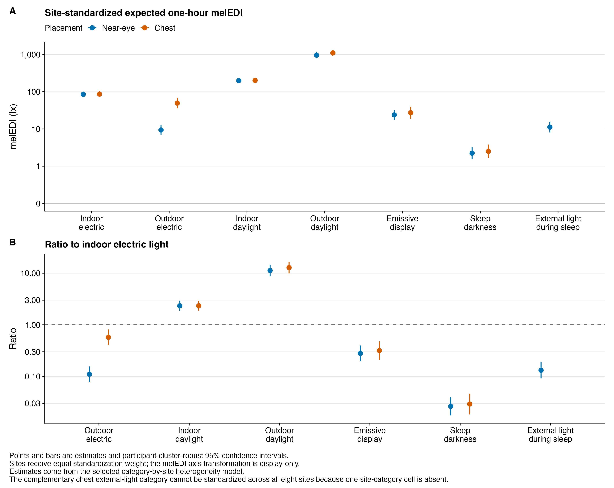
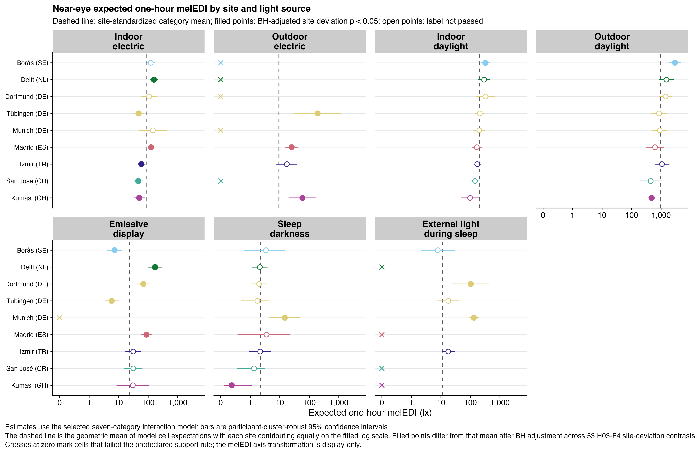
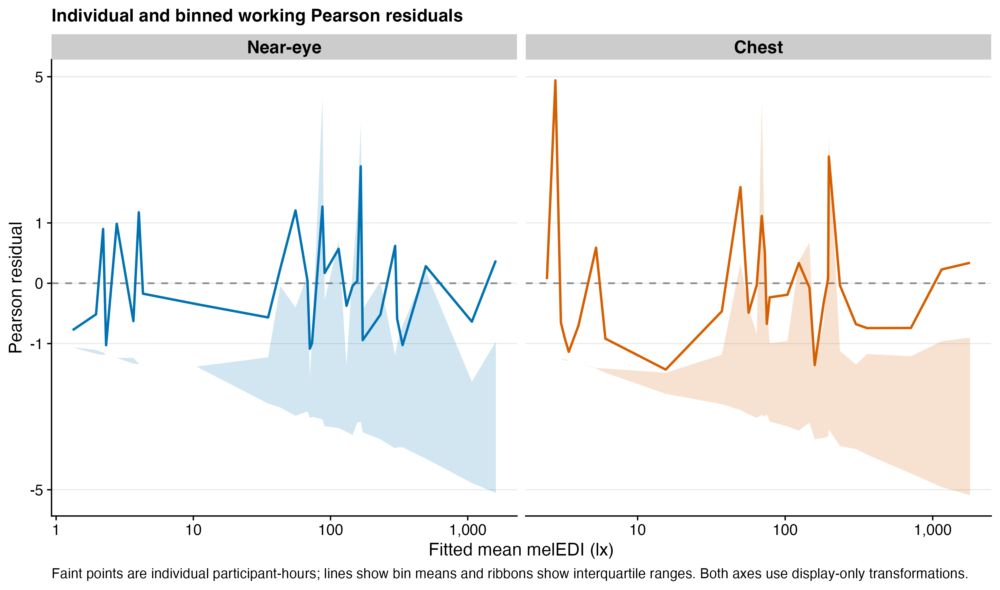
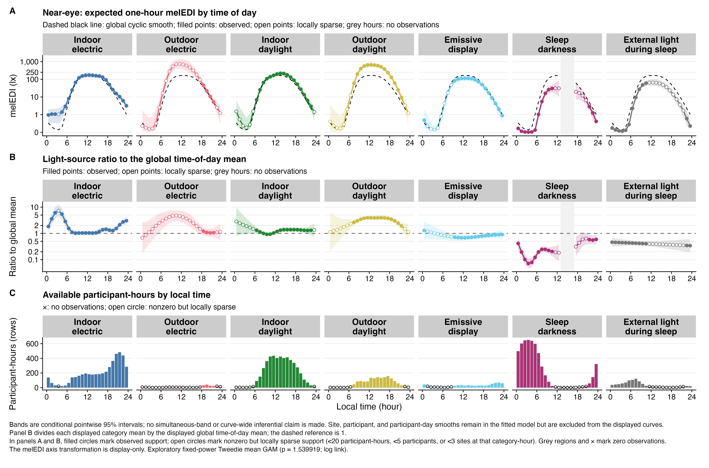
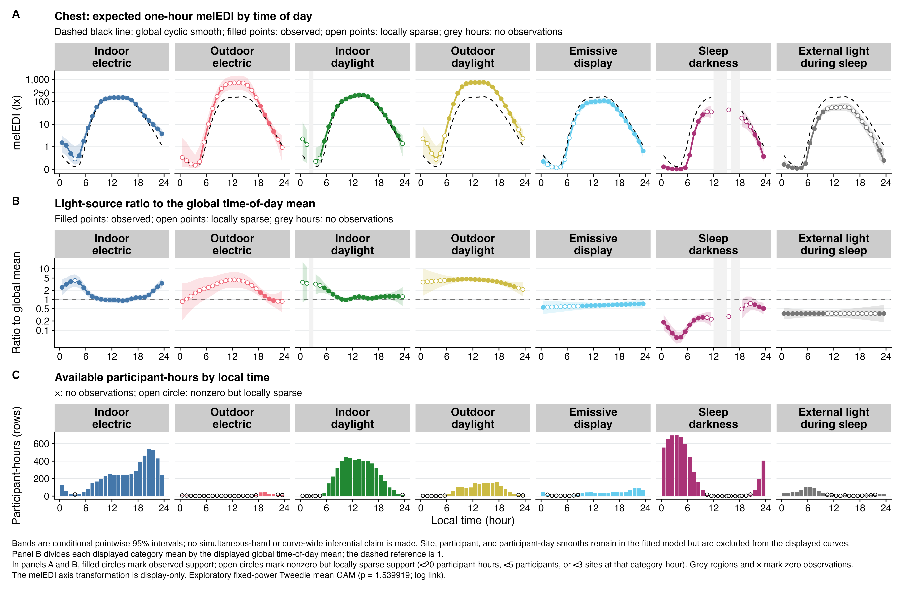
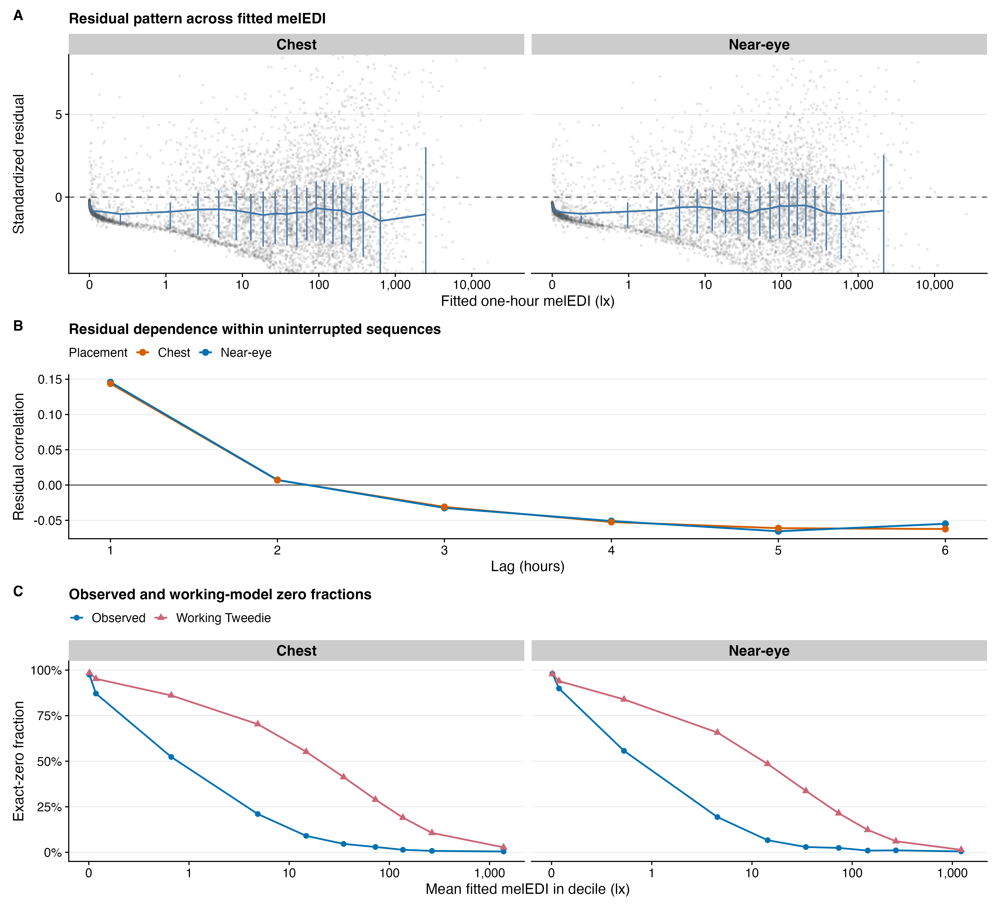
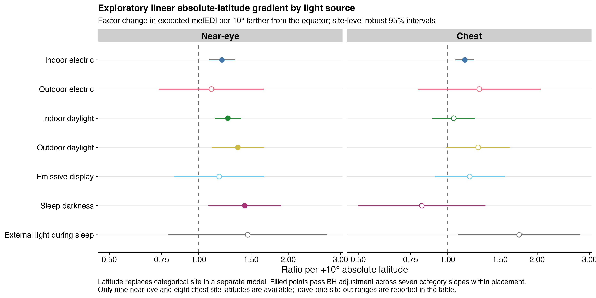

source("scripts/project.R")
analysis_setup()
source("scripts/pipeline/paths_io.R")
source("scripts/pipeline/p_value_display.R")
source("scripts/hypotheses/H03/h03_contract.R")
source("scripts/hypotheses/H03/h03_data.R")
source("scripts/hypotheses/H03/h03_modeling.R")
source("scripts/hypotheses/H03/h03_temporal.R")
source("scripts/hypotheses/H03/h03_reporting.R")
root <- normalizePath(Sys.getenv("QUARTO_PROJECT_DIR", unset = getwd()))
producer <- "analyses/H03-light-source.qmd"
options(stringsAsFactors = FALSE, scipen = 999, dplyr.summarise.inform = FALSE)
roots <- list(model_data = file.path(root,"results/intermediate/model_data/H03"), models = file.path(root,"results/models/H03"), diagnostics = file.path(root,"results/csv/diagnostics/H03"), tables = file.path(root,"results/tables/H03"), figures = file.path(root,"results/images/H03"), source_data = file.path(root,"results/csv/source_data/H03"))
invisible(lapply(roots, dir.create, recursive=TRUE, showWarnings=FALSE))
h03_write_csv <- function(data, path, id) {
write_csv_artifact(data, path, producer)
invisible(path)
}
h03_write_rds <- function(object, path, id) {
write_rds_artifact(object, path, producer)
invisible(path)
}H03: Self-reported light source and measured personal light exposure
This analysis relates hourly reported light-source context to measured melanopic light exposure. It estimates population-average associations, checks sensor placement and alternative preprocessing, and explores clock-time patterns. The near-eye analysis is primary; chest measurements are complementary.
Data and model guide
The questionnaire and diary preparation and hourly analysis datasets link each retained light-source report to an eligible participant-hour. The response is the zero-aware geometric mean melanopic EDI in lux. An hour requires at least 30 valid minutes; exact zeros remain valid. Each retained hour has one analysis category, and indoor electric light is the reference category.
Population-mean models use a log link with a fixed-power quasi-Tweedie working variance. Participant-cluster-robust covariance supplies uncertainty for repeated hours. The additive category comparison and the category-by-site interaction answer separate questions. Site-average estimates weight represented sites equally. A pooled category requires at least 200 hours, 20 participants and three sites; a site-category contrast additionally requires 20 hours, five participants and five participants shared with the reference category. Sparse cells do not receive unsupported estimates.
The following sections report the omnibus restrictions, declared multiplicity families, exact fitted samples and category contrasts. Residual zero mass and temporal dependence remain relevant qualifications. Alternative preprocessing, matched sensor hours, category composition, participant and site influence are evaluated separately. The participant-intercept decomposition and nonlinear clock-time models are exploratory extensions, with their own estimands and diagnostics.
The executable sections below write fitted objects to results/models/H03/, reader tables to results/tables/H03/, and the supporting numerical and figure outputs under results/. Start with the calculations below or jump to findings and interpretation.
Setup
Shared helpers define category coding, covariance estimation, prediction contrasts and plotting. The computations below start from the hourly model-ready data generated by the preparation notebooks.
Prepare hourly analysis samples
Join each eligible diary hour to the matching light measurement. Require at least 30 valid minutes, preserve zero measurements, and construct primary, paired-sensor, alternative-preprocessing and boundary-exclusion samples.
inputs <- h03_load_inputs(root)
spec <- h03_specification()
formulas <- h03_formula_set()
multiplicity <- h03_multiplicity_registry()
diary <- h03_prepare_diary(
inputs$diary,
inputs$categories,
inputs$sites
)
near_prepared <- h03_prepare_primary_frame(
inputs$near_eye,
diary,
"Near-eye",
inputs$categories,
inputs$sites
)
chest_prepared <- h03_prepare_primary_frame(
inputs$chest,
diary,
"Chest",
inputs$categories,
inputs$sites
)
main_frames <- list(
near_eye = near_prepared$frame,
chest = chest_prepared$frame
)
paired_frames <- h03_prepare_paired_frames(
main_frames$near_eye,
main_frames$chest
)
paired_frames <- lapply(paired_frames, h03_add_ar_sequences)
gap_frames_raw <- h03_prepare_gap_frames(
inputs$gap_timing_unaware,
diary,
inputs$categories,
inputs$sites
)
gap_frames <- list(
near_eye = gap_frames_raw$glasses,
chest = gap_frames_raw$chest
)
boundary_frames <- lapply(
main_frames,
function(frame) h03_add_ar_sequences(h03_exclude_boundary_hours(frame))
)
supported_cell_frames <- lapply(
main_frames,
function(frame) {
h03_add_ar_sequences(h03_exclude_unsupported_cells(
frame,
inputs$categories,
inputs$sites,
spec
))
}
)
dplyr::bind_rows(lapply(main_frames, function(x) tibble::tibble(hours=nrow(x), participants=dplyr::n_distinct(x$participant))))# A tibble: 2 × 2
hours participants
<int> <int>
1 17935 140
2 19512 151Fit population-average and site-specific associations
The primary quasi-Tweedie log-link model estimates the mean hourly response with participant-clustered covariance. Site interaction representations are evaluated using design rank, covariance conditioning, leverage and support criteria before interpreting their estimates. These are statistical estimability checks.
interaction_check <- list(
near_eye=h03_run_interaction_check(main_frames$near_eye,"Near-eye",inputs$categories,inputs$sites,spec),
chest=h03_run_interaction_check(main_frames$chest,"Chest",inputs$categories,inputs$sites,spec))
h03_write_rds(interaction_check,file.path(roots$models,"H03_interaction_check_models.rds"),"interaction_models")
h03_write_csv(dplyr::bind_rows(interaction_check$near_eye$estimability_check,interaction_check$chest$estimability_check),file.path(roots$diagnostics,"H03_interaction_architecture_check.csv"),"interaction_diagnostics")
main_near <- h03_fit_additive_run(
main_frames$near_eye,
"main__near_eye",
"Near-eye",
"primary_dataset",
inputs$categories,
spec,
family_prefix = "H03-F"
)
main_near$estimands$family_id <- "H03-F2-context-contrasts"
main_near$omnibus$family_id <- "H03-F1-omnibus"
main_near$observed_weighted$family_id <-
"H03-S5-near-eye-observed-sample-weighting"
main_chest <- h03_fit_additive_run(
main_frames$chest,
"main__chest",
"Chest",
"primary_dataset",
inputs$categories,
spec,
family_prefix = "H03-C"
)
main_chest$estimands$family_id <- "H03-C2-context-contrasts"
main_chest$omnibus$family_id <- "H03-C1-omnibus"
main_chest$observed_weighted$family_id <-
"H03-S5-chest-observed-sample-weighting"
message("Extracting selected full-interaction effects after check selection")
near_interaction <- interaction_check$near_eye
chest_interaction <- interaction_check$chest
near_site_estimands <- h03_interaction_estimands(
near_interaction$selected_bundle,
near_interaction$selected_architecture,
inputs$categories,
near_interaction$cell_support,
"H03-F4-site-context-contrasts"
) |>
dplyr::mutate(placement = "Near-eye", .before = 1)
chest_site_estimands <- h03_interaction_estimands(
chest_interaction$selected_bundle,
chest_interaction$selected_architecture,
inputs$categories,
chest_interaction$cell_support,
"H03-C4-site-context-contrasts"
) |>
dplyr::mutate(placement = "Chest", .before = 1)
near_heterogeneity <- h03_interaction_omnibus(
near_interaction$selected_bundle,
near_interaction$selected_restriction,
"H03-F3-site-heterogeneity",
near_interaction$selected_architecture
) |>
dplyr::mutate(placement = "Near-eye", .before = 1)
chest_heterogeneity <- h03_interaction_omnibus(
chest_interaction$selected_bundle,
chest_interaction$selected_restriction,
"H03-C3-site-heterogeneity",
chest_interaction$selected_architecture
) |>
dplyr::mutate(placement = "Chest", .before = 1)
dplyr::bind_rows(main_near$estimands,main_chest$estimands)# A tibble: 14 × 27
run_id placement scenario_id working_power category_order category_code
<chr> <chr> <chr> <dbl> <int> <chr>
1 main__near_… Near-eye primary_da… 1.54 1 electric_ind…
2 main__near_… Near-eye primary_da… 1.54 2 electric_out…
3 main__near_… Near-eye primary_da… 1.54 3 daylight_ind…
4 main__near_… Near-eye primary_da… 1.54 4 daylight_out…
5 main__near_… Near-eye primary_da… 1.54 5 display
6 main__near_… Near-eye primary_da… 1.54 6 sleep_darkne…
7 main__near_… Near-eye primary_da… 1.54 7 sleep_extern…
8 main__chest Chest primary_da… 1.54 1 electric_ind…
9 main__chest Chest primary_da… 1.54 2 electric_out…
10 main__chest Chest primary_da… 1.54 3 daylight_ind…
11 main__chest Chest primary_da… 1.54 4 daylight_out…
12 main__chest Chest primary_da… 1.54 5 display
13 main__chest Chest primary_da… 1.54 6 sleep_darkne…
14 main__chest Chest primary_da… 1.54 7 sleep_extern…
# ℹ 21 more variables: light_source <chr>, short_label <chr>,
# distribution <chr>, expected_mel_edi_lx <dbl>, expected_conf_low_lx <dbl>,
# expected_conf_high_lx <dbl>, model_ratio_to_indoor <dbl>,
# ratio_to_indoor <dbl>, ratio_conf_low <dbl>, ratio_conf_high <dbl>,
# statistic <dbl>, df <int>, p_raw <dbl>, estimability_status <chr>,
# hours <int>, participants <int>, participant_days <int>, sites <int>,
# family_id <chr>, family_n <int>, p_adjusted <dbl>Sensitivity analyses
Repeat the additive model using the same observed hour for both sensors, the alternative preprocessing baseline, boundary exclusions, support restrictions, alternative working powers and within/between participant light-source proportions.
run_registry <- tibble::tribble(
~run_id, ~scenario_id, ~placement, ~frame_id, ~working_power, ~formula_id,
"paired__near_eye", "paired_common_sample", "Near-eye", "paired_near", spec$working_tweedie_power, "primary_population_mean",
"paired__chest", "paired_common_sample", "Chest", "paired_chest", spec$working_tweedie_power, "primary_population_mean",
"gap__near_eye", "gap_timing_unaware_dataset", "Near-eye", "gap_near", spec$working_tweedie_power, "primary_population_mean",
"gap__chest", "gap_timing_unaware_dataset", "Chest", "gap_chest", spec$working_tweedie_power, "primary_population_mean",
"boundary_excluded__near_eye", "boundary_hours_excluded", "Near-eye", "boundary_near", spec$working_tweedie_power, "primary_population_mean",
"boundary_excluded__chest", "boundary_hours_excluded", "Chest", "boundary_chest", spec$working_tweedie_power, "primary_population_mean",
"supported_cells__near_eye", "unsupported_cells_excluded", "Near-eye", "supported_near", spec$working_tweedie_power, "primary_population_mean",
"supported_cells__chest", "unsupported_cells_excluded", "Chest", "supported_chest", spec$working_tweedie_power, "primary_population_mean",
"power_1_30__near_eye", "working_power_1_30", "Near-eye", "main_near", 1.30, "primary_population_mean",
"power_1_30__chest", "working_power_1_30", "Chest", "main_chest", 1.30, "primary_population_mean",
"power_1_80__near_eye", "working_power_1_80", "Near-eye", "main_near", 1.80, "primary_population_mean",
"power_1_80__chest", "working_power_1_80", "Chest", "main_chest", 1.80, "primary_population_mean",
"mundlak__near_eye", "mundlak_within_between", "Near-eye", "mundlak_near", spec$working_tweedie_power, "secondary_mundlak_audit",
"mundlak__chest", "mundlak_within_between", "Chest", "mundlak_chest", spec$working_tweedie_power, "secondary_mundlak_audit"
)
scenario_frames <- list(
paired_near = paired_frames$near_eye,
paired_chest = paired_frames$chest,
gap_near = gap_frames$near_eye,
gap_chest = gap_frames$chest,
boundary_near = boundary_frames$near_eye,
boundary_chest = boundary_frames$chest,
supported_near = supported_cell_frames$near_eye,
supported_chest = supported_cell_frames$chest,
main_near = main_frames$near_eye,
main_chest = main_frames$chest,
mundlak_near = h03_add_mundlak_proportions(main_frames$near_eye, spec),
mundlak_chest = h03_add_mundlak_proportions(main_frames$chest, spec)
)
message("Running bounded additive sensitivity fits")
sensitivity_runs <- vector("list", nrow(run_registry))
for (index in seq_len(nrow(run_registry))) {
run <- run_registry[index, , drop = FALSE]
message(" ", run$run_id)
formula <- formulas[[run$formula_id]]
sensitivity_runs[[index]] <- h03_fit_additive_run(
scenario_frames[[run$frame_id]],
run$run_id,
run$placement,
run$scenario_id,
inputs$categories,
spec,
working_power = run$working_power,
formula = formula,
family_prefix = paste0("H03-S-", run$run_id)
)
}
names(sensitivity_runs) <- run_registry$run_id
sensitivity_estimands <- dplyr::bind_rows(lapply(
sensitivity_runs,
`[[`,
"estimands"
))
sensitivity_omnibus <- dplyr::bind_rows(lapply(
sensitivity_runs,
`[[`,
"omnibus"
))
sensitivity_diagnostics <- dplyr::bind_rows(lapply(
sensitivity_runs,
`[[`,
"diagnostics"
))
sensitivity_samples <- dplyr::bind_rows(lapply(
sensitivity_runs,
`[[`,
"sample"
))
main_estimands <- dplyr::bind_rows(
main_near$estimands,
main_chest$estimands
)
main_omnibus <- dplyr::bind_rows(main_near$omnibus, main_chest$omnibus)
main_diagnostics <- dplyr::bind_rows(
main_near$diagnostics,
main_chest$diagnostics
)
main_samples <- dplyr::bind_rows(main_near$sample, main_chest$sample)
weighting_sensitivity <- dplyr::bind_rows(
main_near$observed_weighted,
main_chest$observed_weighted
)
comparison_reference <- main_estimands |>
dplyr::select(
.data$placement,
.data$category_code,
primary_ratio = .data$ratio_to_indoor,
primary_conf_low = .data$ratio_conf_low,
primary_conf_high = .data$ratio_conf_high,
primary_p_adjusted = .data$p_adjusted
)
sensitivity_comparison <- sensitivity_estimands |>
dplyr::left_join(
comparison_reference,
by = c("placement", "category_code"),
relationship = "many-to-one"
) |>
dplyr::mutate(
ratio_relative_change_percent = 100 *
(.data$ratio_to_indoor / .data$primary_ratio - 1),
sign_relative_to_null_concordant = sign(log(.data$ratio_to_indoor)) ==
sign(log(.data$primary_ratio)),
primary_ratio_inside_sensitivity_interval =
.data$primary_ratio >= .data$ratio_conf_low &
.data$primary_ratio <= .data$ratio_conf_high,
stability = dplyr::case_when(
.data$estimability_status == "SUPPORT_NON_ESTIMABLE" ~
"support_non_estimable",
!is.finite(.data$ratio_to_indoor) ~ "non_estimable",
.data$sign_relative_to_null_concordant &
abs(.data$ratio_relative_change_percent) <= 25 ~ "stable",
.data$sign_relative_to_null_concordant ~ "magnitude_shift",
TRUE ~ "direction_shift"
)
)
paired_comparison <- sensitivity_estimands |>
dplyr::filter(.data$scenario_id == "paired_common_sample") |>
dplyr::mutate(
placement_id = dplyr::recode(
.data$placement,
`Near-eye` = "near_eye",
Chest = "chest"
)
) |>
dplyr::select(
.data$placement_id,
.data$category_order,
.data$category_code,
.data$estimability_status,
.data$ratio_to_indoor,
.data$ratio_conf_low,
.data$ratio_conf_high,
.data$hours,
.data$participants,
.data$participant_days,
.data$sites
) |>
tidyr::pivot_wider(
names_from = "placement_id",
values_from = c(
"estimability_status", "ratio_to_indoor", "ratio_conf_low",
"ratio_conf_high", "hours", "participants", "participant_days",
"sites"
),
names_glue = "{.value}_{placement_id}"
) |>
dplyr::transmute(
.data$category_order,
.data$category_code,
near_estimability_status = .data$estimability_status_near_eye,
chest_estimability_status = .data$estimability_status_chest,
near_ratio = .data$ratio_to_indoor_near_eye,
near_conf_low = .data$ratio_conf_low_near_eye,
near_conf_high = .data$ratio_conf_high_near_eye,
chest_ratio = .data$ratio_to_indoor_chest,
chest_conf_low = .data$ratio_conf_low_chest,
chest_conf_high = .data$ratio_conf_high_chest,
paired_hours_near = .data$hours_near_eye,
paired_hours_chest = .data$hours_chest,
paired_participants_near = .data$participants_near_eye,
paired_participants_chest = .data$participants_chest,
paired_days_near = .data$participant_days_near_eye,
paired_days_chest = .data$participant_days_chest,
paired_sites_near = .data$sites_near_eye,
paired_sites_chest = .data$sites_chest
)
sensitivity_comparison# A tibble: 98 × 35
run_id placement scenario_id working_power category_order category_code
<chr> <chr> <chr> <dbl> <int> <chr>
1 paired__nea… Near-eye paired_com… 1.54 1 electric_ind…
2 paired__nea… Near-eye paired_com… 1.54 2 electric_out…
3 paired__nea… Near-eye paired_com… 1.54 3 daylight_ind…
4 paired__nea… Near-eye paired_com… 1.54 4 daylight_out…
5 paired__nea… Near-eye paired_com… 1.54 5 display
6 paired__nea… Near-eye paired_com… 1.54 6 sleep_darkne…
7 paired__nea… Near-eye paired_com… 1.54 7 sleep_extern…
8 paired__che… Chest paired_com… 1.54 1 electric_ind…
9 paired__che… Chest paired_com… 1.54 2 electric_out…
10 paired__che… Chest paired_com… 1.54 3 daylight_ind…
# ℹ 88 more rows
# ℹ 29 more variables: light_source <chr>, short_label <chr>,
# distribution <chr>, expected_mel_edi_lx <dbl>, expected_conf_low_lx <dbl>,
# expected_conf_high_lx <dbl>, model_ratio_to_indoor <dbl>,
# ratio_to_indoor <dbl>, ratio_conf_low <dbl>, ratio_conf_high <dbl>,
# statistic <dbl>, df <int>, p_raw <dbl>, estimability_status <chr>,
# hours <int>, participants <int>, participant_days <int>, sites <int>, …Influence and residual checks
Delete each site in turn and the five highest-ranked participant clusters for each placement. Compare their estimates with the complete sample and inspect residual dependence and group-level residual structure.
influence_refit <- function(
frame,
placement,
deletion_type,
deletion_id,
primary_result,
fit_interaction = FALSE,
primary_site_estimands = NULL,
selected_architecture = NULL
) {
reduced <- if (deletion_type == "site") {
dplyr::filter(frame, as.character(.data$site) != deletion_id)
} else {
dplyr::filter(frame, as.character(.data$participant) != deletion_id)
}
reduced <- h03_add_ar_sequences(droplevels(reduced))
run_id <- paste("influence", placement, deletion_type, deletion_id, sep = "__")
additive <- h03_fit_additive_run(
reduced,
run_id,
placement,
paste0("delete_", deletion_type),
inputs$categories,
spec,
family_prefix = paste0("H03-I-", placement, "-", deletion_type)
)
category <- additive$estimands |>
dplyr::left_join(
primary_result$estimands |>
dplyr::select(
.data$category_code,
full_ratio = .data$ratio_to_indoor,
full_conf_low = .data$ratio_conf_low,
full_conf_high = .data$ratio_conf_high,
full_p_adjusted = .data$p_adjusted
),
by = "category_code",
relationship = "one-to-one"
) |>
dplyr::mutate(
deletion_type = deletion_type,
deletion_id = deletion_id,
full_omnibus_p = primary_result$omnibus$p_raw,
deletion_omnibus_p = additive$omnibus$p_raw,
omnibus_decision_changed =
(primary_result$omnibus$p_raw < 0.05) !=
(additive$omnibus$p_raw < 0.05),
ratio_relative_change_percent = 100 *
(.data$ratio_to_indoor / .data$full_ratio - 1),
full_ratio_inside_deletion_interval =
.data$full_ratio >= .data$ratio_conf_low &
.data$full_ratio <= .data$ratio_conf_high,
.before = 1
)
site_result <- NULL
if (fit_interaction) {
interaction_frame <- h03_make_interaction_frame(
reduced,
selected_architecture,
inputs$categories,
spec
)
interaction_bundle <- h03_fit_quasi(
h03_interaction_formula(selected_architecture),
interaction_frame,
spec$working_tweedie_power
)
restriction <- h03_interaction_restriction(
interaction_bundle,
selected_architecture
)
support <- h03_cell_support(
reduced,
inputs$categories,
inputs$sites,
spec
)
site_result <- h03_interaction_estimands(
interaction_bundle,
selected_architecture,
inputs$categories,
support,
paste0("H03-I-site-context-", deletion_type)
) |>
dplyr::left_join(
primary_site_estimands |>
dplyr::select(
.data$site,
.data$category_code,
full_site_deviation = .data$site_deviation_ratio,
full_site_conf_low = .data$site_deviation_conf_low,
full_site_conf_high = .data$site_deviation_conf_high
),
by = c("site", "category_code"),
relationship = "one-to-one"
) |>
dplyr::mutate(
placement = placement,
deletion_type = deletion_type,
deletion_id = deletion_id,
site_deviation_relative_change_percent = 100 *
(.data$site_deviation_ratio / .data$full_site_deviation - 1),
full_deviation_inside_deletion_interval =
.data$full_site_deviation >= .data$site_deviation_conf_low &
.data$full_site_deviation <= .data$site_deviation_conf_high,
.before = 1
)
}
list(
category = category,
site = site_result,
diagnostics = additive$diagnostics,
sample = additive$sample
)
}
near_clusters <- h03_cluster_diagnostics(main_near$bundle)
chest_clusters <- h03_cluster_diagnostics(main_chest$bundle)
influence_jobs <- dplyr::bind_rows(
tidyr::crossing(
placement = c("Near-eye", "Chest"),
deletion_type = "site",
deletion_id = c(
levels(main_near$bundle$data$site),
setdiff(
levels(main_chest$bundle$data$site),
levels(main_near$bundle$data$site)
)
)
) |>
dplyr::filter(
(.data$placement == "Near-eye" &
.data$deletion_id %in% levels(main_near$bundle$data$site)) |
(.data$placement == "Chest" &
.data$deletion_id %in% levels(main_chest$bundle$data$site))
),
tibble::tibble(
placement = "Near-eye",
deletion_type = "participant",
deletion_id = near_clusters$participant[1:5]
),
tibble::tibble(
placement = "Chest",
deletion_type = "participant",
deletion_id = chest_clusters$participant[1:5]
)
)
influence_results <- vector("list", nrow(influence_jobs))
for (index in seq_len(nrow(influence_jobs))) {
job <- influence_jobs[index, , drop = FALSE]
message(
" ", job$placement, " delete ", job$deletion_type, ": ",
job$deletion_id
)
is_near <- job$placement == "Near-eye"
influence_results[[index]] <- influence_refit(
frame = if (is_near) main_frames$near_eye else main_frames$chest,
placement = job$placement,
deletion_type = job$deletion_type,
deletion_id = job$deletion_id,
primary_result = if (is_near) main_near else main_chest,
fit_interaction = is_near,
primary_site_estimands = if (is_near) near_site_estimands else NULL,
selected_architecture = if (is_near) {
near_interaction$selected_architecture
} else {
NULL
}
)
}
influence_category <- dplyr::bind_rows(lapply(
influence_results,
`[[`,
"category"
))
influence_site <- dplyr::bind_rows(lapply(
influence_results,
`[[`,
"site"
))
influence_diagnostics <- dplyr::bind_rows(lapply(
influence_results,
`[[`,
"diagnostics"
))
influence_samples <- dplyr::bind_rows(lapply(
influence_results,
`[[`,
"sample"
))
model_diagnostics <- dplyr::bind_rows(
main_diagnostics,
sensitivity_diagnostics,
influence_diagnostics
)
residual_groups <- dplyr::bind_rows(
h03_residual_group_summary(main_near$bundle, "main__near_eye") |>
dplyr::mutate(placement = "Near-eye", .after = "run_id"),
h03_residual_group_summary(main_chest$bundle, "main__chest") |>
dplyr::mutate(placement = "Chest", .after = "run_id")
)
residual_plot_data <- dplyr::bind_rows(
h03_residual_plot_data(main_near$bundle, "main__near_eye") |>
dplyr::mutate(placement = "Near-eye", .after = "run_id"),
h03_residual_plot_data(main_chest$bundle, "main__chest") |>
dplyr::mutate(placement = "Chest", .after = "run_id")
)
cluster_diagnostics <- dplyr::bind_rows(
near_clusters |>
dplyr::mutate(run_id = "main__near_eye", placement = "Near-eye", .before = 1),
chest_clusters |>
dplyr::mutate(run_id = "main__chest", placement = "Chest", .before = 1)
)
main_tests <- dplyr::bind_rows(
main_omnibus,
near_heterogeneity,
chest_heterogeneity
)
all_samples <- dplyr::bind_rows(
main_samples,
sensitivity_samples,
influence_samples
)
all_category_estimands <- dplyr::bind_rows(
main_estimands,
sensitivity_estimands,
weighting_sensitivity
)
all_site_estimands <- dplyr::bind_rows(
near_site_estimands,
chest_site_estimands
)
formula_registry <- tibble::tibble(
formula_id = names(formulas),
formula = vapply(
formulas,
function(value) paste(deparse(value), collapse = " "),
character(1)
)
)
influence_category# A tibble: 189 × 38
deletion_type deletion_id full_omnibus_p deletion_omnibus_p
<chr> <chr> <dbl> <dbl>
1 site BAUA 6.57e-45 3.92e-37
2 site BAUA 6.57e-45 3.92e-37
3 site BAUA 6.57e-45 3.92e-37
4 site BAUA 6.57e-45 3.92e-37
5 site BAUA 6.57e-45 3.92e-37
6 site BAUA 6.57e-45 3.92e-37
7 site BAUA 6.57e-45 3.92e-37
8 site FUSPCEU 6.57e-45 1.63e-40
9 site FUSPCEU 6.57e-45 1.63e-40
10 site FUSPCEU 6.57e-45 1.63e-40
# ℹ 179 more rows
# ℹ 34 more variables: omnibus_decision_changed <lgl>,
# ratio_relative_change_percent <dbl>,
# full_ratio_inside_deletion_interval <lgl>, run_id <chr>, placement <chr>,
# scenario_id <chr>, working_power <dbl>, category_order <int>,
# category_code <chr>, light_source <chr>, short_label <chr>,
# distribution <chr>, expected_mel_edi_lx <dbl>, …Export fitted models and numerical results
Save the exact fitted frames, models, estimates, checks and plot data for subsequent manuscript and supplementary tables.
Export results
h03_write_csv(multiplicity, file.path(roots$model_data, "H03_multiplicity_registry.csv"), "multiplicity")
h03_write_csv(formula_registry, file.path(roots$model_data, "H03_formula_registry.csv"), "formulas")
h03_write_csv(run_registry, file.path(roots$model_data, "H03_sensitivity_run_registry.csv"), "run_registry")
h03_write_csv(all_samples, file.path(roots$model_data, "H03_model_frame_index.csv"), "samples")
h03_write_csv(
dplyr::bind_rows(
h03_category_support(main_frames$near_eye, inputs$categories, spec) |>
dplyr::mutate(placement = "Near-eye", .before = 1),
h03_category_support(main_frames$chest, inputs$categories, spec) |>
dplyr::mutate(placement = "Chest", .before = 1)
),
file.path(roots$model_data, "H03_category_support.csv"),
"category_support"
)
h03_write_csv(
dplyr::bind_rows(
h03_cell_support(main_frames$near_eye, inputs$categories, inputs$sites, spec) |>
dplyr::select(-"participant_ids", -"reference_ids") |>
dplyr::mutate(placement = "Near-eye", .before = 1),
h03_cell_support(main_frames$chest, inputs$categories, inputs$sites, spec) |>
dplyr::select(-"participant_ids", -"reference_ids") |>
dplyr::mutate(placement = "Chest", .before = 1)
),
file.path(roots$model_data, "H03_site_category_support.csv"),
"cell_support"
)
h03_write_rds(
list(
main = main_frames,
paired = paired_frames,
gap_timing_unaware = gap_frames,
boundary_excluded = boundary_frames,
supported_cells_only = supported_cell_frames
),
file.path(roots$model_data, "H03_model_frames.rds"),
"model_frames"
)
h03_write_rds(
list(
main_near_eye = main_near$bundle,
main_chest = main_chest$bundle,
sensitivities = lapply(sensitivity_runs, `[[`, "bundle")
),
file.path(roots$models, "H03_additive_model_objects.rds"),
"additive_models"
)
h03_write_csv(main_estimands, file.path(roots$tables, "H03_primary_category_estimands.csv"), "primary_estimands")
h03_write_csv(all_category_estimands, file.path(roots$tables, "H03_all_category_estimands.csv"), "all_estimands")
h03_write_csv(main_tests, file.path(roots$tables, "H03_primary_omnibus_tests.csv"), "primary_tests")
h03_write_csv(all_site_estimands, file.path(roots$tables, "H03_site_context_estimands.csv"), "site_estimands")
h03_write_csv(sensitivity_comparison, file.path(roots$tables, "H03_sensitivity_comparison.csv"), "sensitivity_comparison")
h03_write_csv(sensitivity_omnibus, file.path(roots$tables, "H03_sensitivity_omnibus_tests.csv"), "sensitivity_tests")
h03_write_csv(paired_comparison, file.path(roots$tables, "H03_paired_placement_comparison.csv"), "paired")
h03_write_csv(influence_category, file.path(roots$tables, "H03_influence_category_refits.csv"), "influence_category")
h03_write_csv(influence_site, file.path(roots$tables, "H03_influence_site_context_refits.csv"), "influence_site")
h03_write_csv(model_diagnostics, file.path(roots$diagnostics, "H03_model_diagnostics.csv"), "diagnostics")
h03_write_csv(residual_groups, file.path(roots$diagnostics, "H03_residual_group_summary.csv"), "residual_groups")
h03_write_csv(residual_plot_data, file.path(roots$source_data, "H03_primary_residual_plot_data.csv"), "residual_plot_data")
h03_write_csv(cluster_diagnostics, file.path(roots$diagnostics, "H03_cluster_influence_scores.csv"), "cluster_scores")
h03_write_csv(influence_jobs, file.path(roots$diagnostics, "H03_influence_refit_registry.csv"), "influence_jobs")
primary_figure_source <- main_estimands
site_figure_source <- near_site_estimands
paired_figure_source <- paired_comparison
h03_write_csv(primary_figure_source, file.path(roots$source_data, "H03_primary_category_figure_data.csv"), "primary_figure_source")
h03_write_csv(site_figure_source, file.path(roots$source_data, "H03_near_eye_site_context_figure_data.csv"), "site_figure_source")
h03_write_csv(paired_figure_source, file.path(roots$source_data, "H03_paired_placement_figure_data.csv"), "paired_figure_source")
message("Creating bounded, final-size H03 figures")
primary_plot <- h03_primary_category_figure(
primary_figure_source,
inputs$categories
)
site_plot <- h03_site_context_figure(
site_figure_source,
inputs$categories,
inputs$sites
)
paired_plot <- h03_paired_placement_figure(
paired_figure_source,
inputs$categories
)
residual_plot <- h03_residual_figure(residual_plot_data)
h03_save_plot(
primary_plot,
"H03_primary_category_estimates",
roots$figures,
width = 12,
height = 10,
producer = producer
)$png
$png$path
[1] "/Users/zauner/Projects/ZaunerEtAl_reproducible_NH/results/images/H03/H03_primary_category_estimates.png"
$png$bytes
[1] 206587
$png$producer
[1] "analyses/H03-light-source.qmd"
$png$r_version
[1] "4.6.1"
$png$written_utc
[1] "2026-09-22 12:12:14 UTC"
$pdf
$pdf$path
[1] "/Users/zauner/Projects/ZaunerEtAl_reproducible_NH/results/images/H03/H03_primary_category_estimates.pdf"
$pdf$bytes
[1] 8081
$pdf$producer
[1] "analyses/H03-light-source.qmd"
$pdf$r_version
[1] "4.6.1"
$pdf$written_utc
[1] "2026-09-22 12:12:14 UTC"
$svg
$svg$path
[1] "/Users/zauner/Projects/ZaunerEtAl_reproducible_NH/results/images/H03/H03_primary_category_estimates.svg"
$svg$bytes
[1] 27123
$svg$producer
[1] "analyses/H03-light-source.qmd"
$svg$r_version
[1] "4.6.1"
$svg$written_utc
[1] "2026-09-22 12:12:14 UTC"Export results
h03_save_plot(
site_plot,
"H03_near_eye_site_context_estimates",
roots$figures,
width = 15,
height = 10,
producer = producer
)$png
$png$path
[1] "/Users/zauner/Projects/ZaunerEtAl_reproducible_NH/results/images/H03/H03_near_eye_site_context_estimates.png"
$png$bytes
[1] 374529
$png$producer
[1] "analyses/H03-light-source.qmd"
$png$r_version
[1] "4.6.1"
$png$written_utc
[1] "2026-09-22 12:12:14 UTC"
$pdf
$pdf$path
[1] "/Users/zauner/Projects/ZaunerEtAl_reproducible_NH/results/images/H03/H03_near_eye_site_context_estimates.pdf"
$pdf$bytes
[1] 11556
$pdf$producer
[1] "analyses/H03-light-source.qmd"
$pdf$r_version
[1] "4.6.1"
$pdf$written_utc
[1] "2026-09-22 12:12:15 UTC"
$svg
$svg$path
[1] "/Users/zauner/Projects/ZaunerEtAl_reproducible_NH/results/images/H03/H03_near_eye_site_context_estimates.svg"
$svg$bytes
[1] 55313
$svg$producer
[1] "analyses/H03-light-source.qmd"
$svg$r_version
[1] "4.6.1"
$svg$written_utc
[1] "2026-09-22 12:12:15 UTC"Export results
h03_save_plot(
paired_plot,
"H03_paired_placement_comparison",
roots$figures,
width = 8,
height = 8,
producer = producer
)$png
$png$path
[1] "/Users/zauner/Projects/ZaunerEtAl_reproducible_NH/results/images/H03/H03_paired_placement_comparison.png"
$png$bytes
[1] 132540
$png$producer
[1] "analyses/H03-light-source.qmd"
$png$r_version
[1] "4.6.1"
$png$written_utc
[1] "2026-09-22 12:12:15 UTC"
$pdf
$pdf$path
[1] "/Users/zauner/Projects/ZaunerEtAl_reproducible_NH/results/images/H03/H03_paired_placement_comparison.pdf"
$pdf$bytes
[1] 5534
$pdf$producer
[1] "analyses/H03-light-source.qmd"
$pdf$r_version
[1] "4.6.1"
$pdf$written_utc
[1] "2026-09-22 12:12:15 UTC"
$svg
$svg$path
[1] "/Users/zauner/Projects/ZaunerEtAl_reproducible_NH/results/images/H03/H03_paired_placement_comparison.svg"
$svg$bytes
[1] 9432
$svg$producer
[1] "analyses/H03-light-source.qmd"
$svg$r_version
[1] "4.6.1"
$svg$written_utc
[1] "2026-09-22 12:12:15 UTC"Export results
h03_save_plot(
residual_plot,
"H03_primary_residual_diagnostics",
roots$figures,
width = 11,
height = 6.5,
producer = producer
)$png
$png$path
[1] "/Users/zauner/Projects/ZaunerEtAl_reproducible_NH/results/images/H03/H03_primary_residual_diagnostics.png"
$png$bytes
[1] 260751
$png$producer
[1] "analyses/H03-light-source.qmd"
$png$r_version
[1] "4.6.1"
$png$written_utc
[1] "2026-09-22 12:12:15 UTC"
$pdf
$pdf$path
[1] "/Users/zauner/Projects/ZaunerEtAl_reproducible_NH/results/images/H03/H03_primary_residual_diagnostics.pdf"
$pdf$bytes
[1] 6460
$pdf$producer
[1] "analyses/H03-light-source.qmd"
$pdf$r_version
[1] "4.6.1"
$pdf$written_utc
[1] "2026-09-22 12:12:15 UTC"
$svg
$svg$path
[1] "/Users/zauner/Projects/ZaunerEtAl_reproducible_NH/results/images/H03/H03_primary_residual_diagnostics.svg"
$svg$bytes
[1] 13358
$svg$producer
[1] "analyses/H03-light-source.qmd"
$svg$r_version
[1] "4.6.1"
$svg$written_utc
[1] "2026-09-22 12:12:16 UTC"Observed zeros and model calibration
Quantify observed zero mass and compare it with the working distribution. Check the relationship between response-scale and link-scale site averaging, and inspect residual dependence.
model_path <- file.path(
root,
"results/models/H03/H03_additive_model_objects.rds"
)
if (!file.exists(model_path)) {
h03_abort("Run H03 primary models before post-fit diagnostics")
}
objects <- readRDS(model_path)
models <- list(
near_eye = objects$main_near_eye,
chest = objects$main_chest
)
placements <- c(near_eye = "Near-eye", chest = "Chest")
h03_residual_rows <- function(object, placement) {
tibble::tibble(
placement = placement,
observation_index = seq_len(nrow(object$data)),
fitted_mean = as.numeric(stats::fitted(object$fit)),
pearson_residual = as.numeric(stats::residuals(
object$fit,
type = "pearson"
)),
deviance_residual = as.numeric(stats::residuals(
object$fit,
type = "deviance"
)),
observed_mel_edi_lx = object$data$geo_medi_1h,
observed_zero = object$data$geo_medi_1h == 0,
source_model = "geo_medi_1h ~ site + light_source"
)
}
h03_residual_acf_rows <- function(object, placement, maximum_lag = 6L) {
residual <- stats::residuals(object$fit, type = "pearson")
dplyr::bind_rows(lapply(seq_len(maximum_lag), function(lag) {
estimate <- h03_boundary_lag_correlation(
residual,
object$data$AR_start,
lag = lag
)
tibble::tibble(
placement = placement,
lag = lag,
correlation = unname(estimate[["correlation"]]),
eligible_pairs = as.integer(unname(estimate[["pairs"]])),
boundary_definition = paste(
"pairs remain within the same participant-day contiguous",
"hourly sequence"
),
source_model = "geo_medi_1h ~ site + light_source"
)
}))
}
residual_points <- dplyr::bind_rows(lapply(names(models), function(id) {
h03_residual_rows(models[[id]], placements[[id]])
}))
residual_acf <- dplyr::bind_rows(lapply(names(models), function(id) {
h03_residual_acf_rows(models[[id]], placements[[id]])
}))
h03_zero_rows <- function(object, placement) {
mu <- stats::fitted(object$fit)
power <- object$working_power
dispersion <- summary(object$fit)$dispersion
if (!is.finite(dispersion) || dispersion <= 0 || power <= 1 || power >= 2) {
h03_abort("Invalid working Tweedie parameters for %s", placement)
}
# For a compound Poisson Tweedie with 1 < p < 2, P(Y = 0) is exp(-lambda),
# lambda = mu^(2-p) / (phi * (2-p)). The H03 fit is quasi-likelihood, so
# these are explicitly working-distribution diagnostics, not fitted
# likelihood probabilities.
lambda <- mu^(2 - power) / (dispersion * (2 - power))
zero_probability <- exp(-lambda)
observed_zero <- object$data$geo_medi_1h == 0
tibble::tibble(
placement = placement,
light_source = as.character(object$data$light_source),
fitted_mean_lx = mu,
observed_zero = observed_zero,
working_zero_probability = zero_probability,
working_power = power,
dispersion = dispersion
)
}
row_data <- dplyr::bind_rows(lapply(names(models), function(id) {
h03_zero_rows(models[[id]], placements[[id]])
}))
summarise_zero <- function(data, scope) {
data |>
dplyr::summarise(
observations = dplyr::n(),
observed_zeros = sum(.data$observed_zero),
observed_zero_fraction = mean(.data$observed_zero),
working_expected_zeros = sum(.data$working_zero_probability),
working_expected_zero_fraction = mean(.data$working_zero_probability),
observed_minus_working_fraction =
.data$observed_zero_fraction - .data$working_expected_zero_fraction,
observed_to_working_ratio = dplyr::if_else(
.data$working_expected_zero_fraction > 0,
.data$observed_zero_fraction / .data$working_expected_zero_fraction,
NA_real_
),
zero_brier_score = mean(
(as.numeric(.data$observed_zero) - .data$working_zero_probability)^2
),
working_power = dplyr::first(.data$working_power),
dispersion = dplyr::first(.data$dispersion),
scope = scope,
diagnostic_role = paste(
"working compound-Poisson Tweedie zero-mass check;",
"quasi-likelihood fit does not estimate a zero-mass likelihood"
),
.groups = "drop"
)
}
overall <- row_data |>
dplyr::group_by(.data$placement) |>
summarise_zero("overall") |>
dplyr::mutate(light_source = NA_character_, .after = "placement")
by_category <- row_data |>
dplyr::group_by(.data$placement, .data$light_source) |>
summarise_zero("light_source")
zero_summary <- dplyr::bind_rows(overall, by_category) |>
dplyr::arrange(.data$placement, dplyr::desc(.data$scope), .data$light_source)
zero_bins <- row_data |>
dplyr::group_by(.data$placement) |>
dplyr::mutate(fitted_mean_decile = dplyr::ntile(.data$fitted_mean_lx, 10L)) |>
dplyr::group_by(.data$placement, .data$fitted_mean_decile) |>
dplyr::summarise(
observations = dplyr::n(),
fitted_mean_minimum_lx = min(.data$fitted_mean_lx),
fitted_mean_median_lx = stats::median(.data$fitted_mean_lx),
fitted_mean_maximum_lx = max(.data$fitted_mean_lx),
observed_zero_fraction = mean(.data$observed_zero),
working_expected_zero_fraction = mean(.data$working_zero_probability),
observed_minus_working_fraction =
.data$observed_zero_fraction - .data$working_expected_zero_fraction,
.groups = "drop"
)
h03_standardization_rows <- function(object, placement) {
site_levels <- levels(object$data$site)
category_levels <- levels(object$data$light_source)
grid <- expand.grid(
site = site_levels,
light_source = category_levels,
KEEP.OUT.ATTRS = FALSE,
stringsAsFactors = FALSE
)
grid$site <- factor(grid$site, levels = site_levels)
grid$light_source <- factor(
grid$light_source,
levels = category_levels
)
grid$linear_predictor <- as.numeric(stats::predict(
object$fit,
newdata = grid,
type = "link"
))
grid$expected_mel_edi_lx <- exp(grid$linear_predictor)
grid |>
dplyr::mutate(placement = placement, .before = 1) |>
dplyr::group_by(.data$placement, .data$light_source) |>
dplyr::summarise(
sites_standardized = dplyr::n(),
minimum_site_mean_lx = min(.data$expected_mel_edi_lx),
maximum_site_mean_lx = max(.data$expected_mel_edi_lx),
link_scale_equal_site_backtransform_lx = exp(
mean(.data$linear_predictor)
),
response_scale_equal_site_mean_lx = mean(.data$expected_mel_edi_lx),
.groups = "drop"
)
}
standardization_reconciliation <- dplyr::bind_rows(lapply(
names(models),
function(id) h03_standardization_rows(models[[id]], placements[[id]])
))
primary_path <- file.path(
root,
"results/tables/H03/H03_primary_category_estimands.csv"
)
if (!file.exists(primary_path)) {
h03_abort("Run H03 primary reporting before reconciliation")
}
primary_estimands <- readr::read_csv(primary_path, show_col_types = FALSE) |>
dplyr::filter(.data$distribution == "site_standardized") |>
dplyr::select(
"placement", "category_order", "category_code", "light_source",
reported_expected_mel_edi_lx = "expected_mel_edi_lx"
)
standardization_reconciliation <- standardization_reconciliation |>
dplyr::left_join(
primary_estimands,
by = c("placement", "light_source"),
relationship = "one-to-one"
) |>
dplyr::mutate(
response_minus_link_scale_lx =
.data$response_scale_equal_site_mean_lx -
.data$link_scale_equal_site_backtransform_lx,
response_relative_to_link_scale_percent = 100 * (
.data$response_scale_equal_site_mean_lx /
.data$link_scale_equal_site_backtransform_lx - 1
),
reported_minus_link_scale_lx =
.data$reported_expected_mel_edi_lx -
.data$link_scale_equal_site_backtransform_lx,
reported_estimand = "exp(equal-site mean linear predictor)",
alternative_estimand = "equal-site arithmetic mean of response-scale expected melEDI"
) |>
dplyr::arrange(.data$placement, .data$category_order)
if (
any(!is.finite(
standardization_reconciliation$reported_minus_link_scale_lx
)) ||
max(abs(
standardization_reconciliation$reported_minus_link_scale_lx
)) > 1e-8
) {
h03_abort("site-standardized means failed deterministic reconciliation")
}
diagnostic_root <- file.path(root, "results/csv/diagnostics/H03")
table_root <- file.path(root, "results/tables/H03")
source_root <- file.path(root, "results/csv/source_data/H03")
write_csv_artifact(
zero_summary,
file.path(diagnostic_root, "H03_zero_mass_diagnostics.csv"),
producer
)
write_csv_artifact(
zero_bins,
file.path(diagnostic_root, "H03_zero_mass_calibration_bins.csv"),
producer
)
write_csv_artifact(
residual_acf,
file.path(diagnostic_root, "H03_primary_residual_acf.csv"),
producer
)
write_csv_artifact(
residual_points,
file.path(source_root, "H03_primary_residual_points.csv"),
producer
)
write_csv_artifact(
standardization_reconciliation,
file.path(table_root, "H03_standardization_reconciliation.csv"),
producer
)
zero_summary# A tibble: 16 × 14
placement light_source observations observed_zeros observed_zero_fraction
<chr> <chr> <int> <int> <dbl>
1 Chest <NA> 19512 5409 0.277
2 Chest Darkness during… 5540 4440 0.801
3 Chest Daylight indoors 4979 171 0.0343
4 Chest Daylight outdoo… 1686 59 0.0350
5 Chest Electric light … 5468 265 0.0485
6 Chest Electric light … 219 13 0.0594
7 Chest Emissive displa… 861 84 0.0976
8 Chest Light entering … 759 377 0.497
9 Near-eye <NA> 17935 4977 0.278
10 Near-eye Darkness during… 5225 4100 0.785
11 Near-eye Daylight indoors 4804 130 0.0271
12 Near-eye Daylight outdoo… 1557 57 0.0366
13 Near-eye Electric light … 4629 229 0.0495
14 Near-eye Electric light … 203 25 0.123
15 Near-eye Emissive displa… 664 73 0.110
16 Near-eye Light entering … 853 363 0.426
# ℹ 9 more variables: working_expected_zeros <dbl>,
# working_expected_zero_fraction <dbl>,
# observed_minus_working_fraction <dbl>, observed_to_working_ratio <dbl>,
# zero_brier_score <dbl>, working_power <dbl>, dispersion <dbl>, scope <chr>,
# diagnostic_role <chr>Descriptive explained variation
Fit the declared conditional-mean and Gaussian alternatives on the same data to describe explained variation. Participant-level folds keep the same participant out of both training and validation sets.
model_path <- file.path(
root,
"results/models/H03/H03_additive_model_objects.rds"
)
if (!file.exists(model_path)) {
h03_abort("Run H03 primary models before the GLM fit assessment")
}
objects <- readRDS(model_path)
bundles <- list(
near_eye = objects$main_near_eye,
chest = objects$main_chest
)
placements <- c(near_eye = "Near-eye", chest = "Chest")
working_power <- h03_specification()$working_tweedie_power
model_registry <- tibble::tribble(
~model_id, ~model_label, ~analysis_scale, ~family_label,
~exact_formula, ~outcome_target,
"quasi_tweedie_log", "Quasi-Tweedie, log link", "melEDI (lx)",
"quasi-Tweedie; p = 1.539919; log link",
"geo_medi_1h ~ site + light_source",
"conditional arithmetic mean of hourly melEDI",
"gaussian_identity_raw", "Gaussian, identity link", "melEDI (lx)",
"Gaussian; identity link",
"geo_medi_1h ~ site + light_source",
"conditional arithmetic mean of hourly melEDI",
"gaussian_log10_response", "Gaussian on log10(melEDI + 0.1)",
"log10(melEDI + 0.1 lx)", "Gaussian; identity link after log10 transform",
"log10(geo_medi_1h + 0.1) ~ site + light_source",
"conditional mean on log10 scale; direct inverse is geometric-scale target"
)
h03_candidate_response <- function(data, model_id) {
if (identical(model_id, "gaussian_log10_response")) {
log10(data$geo_medi_1h + 0.1)
} else {
data$geo_medi_1h
}
}
h03_candidate_family <- function(model_id) {
if (identical(model_id, "quasi_tweedie_log")) {
statmod::tweedie(var.power = working_power, link.power = 0)
} else {
stats::gaussian(link = "identity")
}
}
h03_fit_candidate <- function(data, model_id, terms) {
fit_data <- data
fit_data$h03_candidate_outcome <- h03_candidate_response(data, model_id)
formula <- stats::reformulate(terms, response = "h03_candidate_outcome")
warnings <- character()
fit <- withCallingHandlers(
stats::glm(
formula = formula,
data = fit_data,
family = h03_candidate_family(model_id),
control = stats::glm.control(epsilon = 1e-10, maxit = 100L),
model = TRUE,
x = TRUE,
y = TRUE
),
warning = function(condition) {
warnings <<- c(warnings, conditionMessage(condition))
invokeRestart("muffleWarning")
}
)
list(fit = fit, warnings = unique(warnings), formula = formula)
}
h03_predict_candidate <- function(fit, newdata, model_id) {
prediction_data <- newdata
for (variable in intersect(names(fit$xlevels), names(prediction_data))) {
# Prediction must inherit the training-fit contrasts. Reconstructing the
# factor removes custom frame-level contrast attributes that predict.glm
# would otherwise discard with a harmless warning.
prediction_data[[variable]] <- factor(
as.character(prediction_data[[variable]]),
levels = fit$xlevels[[variable]]
)
}
prediction <- as.numeric(stats::predict(
fit,
newdata = prediction_data,
type = "response"
))
if (identical(model_id, "gaussian_log10_response")) {
10^prediction - 0.1
} else {
prediction
}
}
h03_weights <- function(data, weighting) {
if (identical(weighting, "participant_balanced")) {
counts <- table(data$participant)
weight <- 1 / as.numeric(counts[as.character(data$participant)])
} else {
weight <- rep(1, nrow(data))
}
weight / sum(weight)
}
h03_sse_components <- function(response, prediction, weight) {
center <- sum(weight * response)
sse <- sum(weight * (response - prediction)^2)
sst <- sum(weight * (response - center)^2)
list(sse = sse, sst = sst, r_squared = 1 - sse / sst)
}
h03_add_observed_cell_factor <- function(data) {
cell_levels <- data |>
dplyr::distinct(.data$site, .data$light_source) |>
dplyr::arrange(.data$site, .data$light_source) |>
dplyr::transmute(
cell = paste(
as.character(.data$site),
as.character(.data$light_source),
sep = "__"
)
) |>
dplyr::pull(.data$cell)
data$site_source_cell <- factor(
paste(
as.character(data$site),
as.character(data$light_source),
sep = "__"
),
levels = cell_levels
)
data
}
h03_r2_row <- function(
data,
model_id,
placement,
weighting,
loss_basis = c("squared_error", "model_deviance")
) {
loss_basis <- match.arg(loss_basis)
full_architecture <- if (identical(placement, "Chest")) {
"full_observed_cell"
} else {
"full_literal"
}
if (identical(full_architecture, "full_observed_cell")) {
data <- h03_add_observed_cell_factor(data)
}
full_terms <- if (identical(full_architecture, "full_observed_cell")) {
"0 + site_source_cell"
} else {
"site * light_source"
}
term_sets <- list(
intercept = character(),
site = "site",
category = "light_source",
additive = c("site", "light_source"),
full = full_terms
)
fitted <- lapply(term_sets, function(terms) {
h03_fit_candidate(data, model_id, terms)
})
if (loss_basis == "model_deviance") {
losses <- vapply(fitted, function(item) item$fit$deviance, numeric(1))
scale_label <- if (identical(model_id, "quasi_tweedie_log")) {
"working quasi-Tweedie deviance"
} else {
"Gaussian deviance on model response scale"
}
} else {
response <- h03_candidate_response(data, model_id)
weight <- h03_weights(data, weighting)
losses <- vapply(fitted, function(item) {
# Stored factor contrasts that are irrelevant to a reduced formula can
# trigger a harmless "contrasts dropped" warning during prediction.
prediction <- as.numeric(suppressWarnings(stats::predict(
item$fit,
type = "response"
)))
sum(weight * (response - prediction)^2)
}, numeric(1))
scale_label <- paste(
if (identical(weighting, "participant_balanced")) {
"participant-balanced"
} else {
"participant-hour-weighted"
},
"squared error on model response scale"
)
}
overall <- 1 - losses[["full"]] / losses[["intercept"]]
site_partial <- 1 - losses[["additive"]] / losses[["category"]]
category_partial <- 1 - losses[["additive"]] / losses[["site"]]
interaction_partial <- 1 - losses[["full"]] / losses[["additive"]]
site_shapley <- 0.5 * (
(losses[["intercept"]] - losses[["site"]]) +
(losses[["category"]] - losses[["additive"]])
) / losses[["intercept"]]
category_shapley <- 0.5 * (
(losses[["intercept"]] - losses[["category"]]) +
(losses[["site"]] - losses[["additive"]])
) / losses[["intercept"]]
interaction_r_squared <- (
losses[["additive"]] - losses[["full"]]
) / losses[["intercept"]]
registry <- dplyr::filter(model_registry, .data$model_id == .env$model_id)
tibble::tibble(
placement = placement,
model_id = model_id,
model_label = registry$model_label,
heterogeneity_architecture = full_architecture,
analysis_scale = registry$analysis_scale,
loss_basis = loss_basis,
weighting = if (loss_basis == "model_deviance") {
"model-defined observation weighting"
} else {
weighting
},
scale_label = scale_label,
overall_r_squared = overall,
site_partial_r_squared_conditional_on_category = site_partial,
category_partial_r_squared_conditional_on_site = category_partial,
interaction_partial_r_squared_conditional_on_additive =
interaction_partial,
site_shapley_r_squared = site_shapley,
category_shapley_r_squared = category_shapley,
interaction_r_squared = interaction_r_squared,
site_shapley_share_percent = if (overall == 0) {
NA_real_
} else {
100 * site_shapley / overall
},
category_shapley_share_percent = if (overall == 0) {
NA_real_
} else {
100 * category_shapley / overall
},
interaction_share_percent = if (overall == 0) {
NA_real_
} else {
100 * interaction_r_squared / overall
},
intercept_loss = losses[["intercept"]],
site_only_loss = losses[["site"]],
category_only_loss = losses[["category"]],
additive_loss = losses[["additive"]],
full_heterogeneity_loss = losses[["full"]],
full_loss = losses[["full"]],
r_squared_formula = if (identical(model_id, "gaussian_log10_response")) {
paste0(
"log10(geo_medi_1h + 0.1) ~ ",
full_terms
)
} else {
paste0("geo_medi_1h ~ ", full_terms)
},
allocation_definition = paste(
"hierarchy-respecting allocation: site and category main effects",
"are averaged over both entry orders; the interaction enters only",
"after both main effects"
),
full_converged = fitted$full$fit$converged,
full_rank = fitted$full$fit$rank,
full_coefficients = length(stats::coef(fitted$full$fit)),
warning_count = sum(vapply(fitted, function(x) length(x$warnings), integer(1))),
inferential_role = paste(
"descriptive in-sample point estimate; no cluster-bootstrap interval;",
"not a quasi-likelihood effect test"
)
)
}
r_squared_rows <- list()
for (id in names(bundles)) {
data <- bundles[[id]]$data
placement <- placements[[id]]
for (model_id in model_registry$model_id) {
for (weighting in c("participant_hour_weighted", "participant_balanced")) {
key <- paste(id, model_id, weighting, sep = "__")
r_squared_rows[[key]] <- h03_r2_row(
data,
model_id,
placement,
weighting,
loss_basis = "squared_error"
)
}
key <- paste(id, model_id, "deviance", sep = "__")
r_squared_rows[[key]] <- h03_r2_row(
data,
model_id,
placement,
weighting = "participant_hour_weighted",
loss_basis = "model_deviance"
)
}
}
r_squared <- dplyr::bind_rows(r_squared_rows)
h03_fold_assignments <- function(data, folds = 5L) {
participants <- data |>
dplyr::distinct(.data$site, .data$participant) |>
dplyr::group_by(.data$site) |>
dplyr::arrange(as.character(.data$participant), .by_group = TRUE) |>
dplyr::mutate(fold = (dplyr::row_number() - 1L) %% folds + 1L) |>
dplyr::ungroup()
dplyr::left_join(
data,
participants,
by = c("site", "participant"),
relationship = "many-to-one"
)
}
h03_fold_metrics <- function(data, model_id, placement, fold) {
training <- dplyr::filter(data, .data$fold != .env$fold)
testing <- dplyr::filter(data, .data$fold == .env$fold)
fitted <- h03_fit_candidate(
training,
model_id,
c("site", "light_source")
)
prediction <- h03_predict_candidate(fitted$fit, testing, model_id)
observed <- testing$geo_medi_1h
clipped_prediction <- pmax(prediction, 0)
hour_weight <- h03_weights(testing, "participant_hour_weighted")
participant_weight <- h03_weights(testing, "participant_balanced")
hour_sse <- h03_sse_components(observed, prediction, hour_weight)
participant_sse <- h03_sse_components(
observed,
prediction,
participant_weight
)
observed_log <- log10(observed + 0.1)
predicted_log <- log10(clipped_prediction + 0.1)
registry <- dplyr::filter(model_registry, .data$model_id == .env$model_id)
tibble::tibble(
placement = placement,
model_id = model_id,
model_label = registry$model_label,
fold = fold,
training_participants = dplyr::n_distinct(training$participant),
test_participants = dplyr::n_distinct(testing$participant),
test_observations = nrow(testing),
converged = fitted$fit$converged,
rank = fitted$fit$rank,
coefficients = length(stats::coef(fitted$fit)),
warning_count = length(fitted$warnings),
negative_prediction_fraction = mean(prediction < 0),
observed_mean_lx = sum(hour_weight * observed),
predicted_mean_lx = sum(hour_weight * prediction),
raw_rmse_lx = sqrt(hour_sse$sse),
raw_mae_lx = sum(hour_weight * abs(observed - prediction)),
raw_efron_r_squared = hour_sse$r_squared,
participant_balanced_rmse_lx = sqrt(participant_sse$sse),
participant_balanced_mae_lx = sum(
participant_weight * abs(observed - prediction)
),
participant_balanced_efron_r_squared = participant_sse$r_squared,
log10_rmse = sqrt(sum(hour_weight * (observed_log - predicted_log)^2)),
log10_mae = sum(hour_weight * abs(observed_log - predicted_log))
)
}
fold_rows <- list()
for (id in names(bundles)) {
data <- h03_fold_assignments(bundles[[id]]$data, folds = 5L)
for (model_id in model_registry$model_id) {
for (fold in 1:5) {
key <- paste(id, model_id, fold, sep = "__")
fold_rows[[key]] <- h03_fold_metrics(
data,
model_id,
placements[[id]],
fold
)
}
}
}
fold_metrics <- dplyr::bind_rows(fold_rows)
cross_validation <- fold_metrics |>
dplyr::group_by(.data$placement, .data$model_id, .data$model_label) |>
dplyr::summarise(
folds = dplyr::n(),
all_converged = all(.data$converged),
all_full_rank = all(.data$rank == .data$coefficients),
warning_count = sum(.data$warning_count),
negative_prediction_fraction = stats::weighted.mean(
.data$negative_prediction_fraction,
.data$test_observations
),
observed_mean_lx = stats::weighted.mean(
.data$observed_mean_lx,
.data$test_observations
),
predicted_mean_lx = stats::weighted.mean(
.data$predicted_mean_lx,
.data$test_observations
),
raw_rmse_lx = sqrt(stats::weighted.mean(
.data$raw_rmse_lx^2,
.data$test_observations
)),
raw_mae_lx = stats::weighted.mean(
.data$raw_mae_lx,
.data$test_observations
),
raw_efron_r_squared_fold_weighted = stats::weighted.mean(
.data$raw_efron_r_squared,
.data$test_observations
),
participant_balanced_rmse_lx = sqrt(mean(
.data$participant_balanced_rmse_lx^2
)),
participant_balanced_mae_lx = mean(
.data$participant_balanced_mae_lx
),
participant_balanced_efron_r_squared_fold_weighted = mean(
.data$participant_balanced_efron_r_squared
),
log10_rmse = sqrt(stats::weighted.mean(
.data$log10_rmse^2,
.data$test_observations
)),
log10_mae = stats::weighted.mean(
.data$log10_mae,
.data$test_observations
),
test_observations = sum(.data$test_observations),
test_participants_fold_sum = sum(.data$test_participants),
comparison_role = paste(
"deterministic five-fold participant-blocked cross-validation,",
"stratified within site; descriptive model comparison"
),
.groups = "drop"
)
if (
nrow(fold_metrics) != 30L ||
any(!fold_metrics$converged) ||
any(fold_metrics$rank != fold_metrics$coefficients) ||
any(!is.finite(cross_validation$raw_rmse_lx)) ||
any(!is.finite(r_squared$overall_r_squared))
) {
h03_abort("H03 bounded GLM fit assessment failed a numerical assertion")
}
table_root <- file.path(root, "results/tables/H03")
diagnostic_root <- file.path(root, "results/csv/diagnostics/H03")
dir.create(table_root, recursive = TRUE, showWarnings = FALSE)
dir.create(diagnostic_root, recursive = TRUE, showWarnings = FALSE)
write_csv_artifact(
model_registry,
file.path(table_root, "H03_glm_candidate_model_registry.csv"),
producer
)
write_csv_artifact(
r_squared,
file.path(table_root, "H03_glm_r_squared_and_effect_partition.csv"),
producer
)
write_csv_artifact(
cross_validation,
file.path(table_root, "H03_glm_candidate_cross_validation.csv"),
producer
)
write_csv_artifact(
fold_metrics,
file.path(diagnostic_root, "H03_glm_candidate_cross_validation_folds.csv"),
producer
)
r_squared# A tibble: 18 × 31
placement model_id model_label heterogeneity_archit…¹ analysis_scale
<chr> <chr> <chr> <chr> <chr>
1 Near-eye quasi_tweedie_log Quasi-Twee… full_literal melEDI (lx)
2 Near-eye quasi_tweedie_log Quasi-Twee… full_literal melEDI (lx)
3 Near-eye quasi_tweedie_log Quasi-Twee… full_literal melEDI (lx)
4 Near-eye gaussian_identit… Gaussian, … full_literal melEDI (lx)
5 Near-eye gaussian_identit… Gaussian, … full_literal melEDI (lx)
6 Near-eye gaussian_identit… Gaussian, … full_literal melEDI (lx)
7 Near-eye gaussian_log10_r… Gaussian o… full_literal log10(melEDI …
8 Near-eye gaussian_log10_r… Gaussian o… full_literal log10(melEDI …
9 Near-eye gaussian_log10_r… Gaussian o… full_literal log10(melEDI …
10 Chest quasi_tweedie_log Quasi-Twee… full_observed_cell melEDI (lx)
11 Chest quasi_tweedie_log Quasi-Twee… full_observed_cell melEDI (lx)
12 Chest quasi_tweedie_log Quasi-Twee… full_observed_cell melEDI (lx)
13 Chest gaussian_identit… Gaussian, … full_observed_cell melEDI (lx)
14 Chest gaussian_identit… Gaussian, … full_observed_cell melEDI (lx)
15 Chest gaussian_identit… Gaussian, … full_observed_cell melEDI (lx)
16 Chest gaussian_log10_r… Gaussian o… full_observed_cell log10(melEDI …
17 Chest gaussian_log10_r… Gaussian o… full_observed_cell log10(melEDI …
18 Chest gaussian_log10_r… Gaussian o… full_observed_cell log10(melEDI …
# ℹ abbreviated name: ¹heterogeneity_architecture
# ℹ 26 more variables: loss_basis <chr>, weighting <chr>, scale_label <chr>,
# overall_r_squared <dbl>,
# site_partial_r_squared_conditional_on_category <dbl>,
# category_partial_r_squared_conditional_on_site <dbl>,
# interaction_partial_r_squared_conditional_on_additive <dbl>,
# site_shapley_r_squared <dbl>, category_shapley_r_squared <dbl>, …Exploratory participant random intercept
Fit auxiliary nested Tweedie random-intercept models on the primary near-eye sample. Report marginal and conditional explained variation, the intraclass correlation and a shared allocation of the fixed-effect contribution.
run_id <- "participant_random_intercept__near_eye"
working_power <- h03_specification()$working_tweedie_power
model_root <- file.path(root, "results/models/H03")
diagnostic_root <- file.path(root, "results/csv/diagnostics/H03")
table_root <- file.path(root, "results/tables/H03")
fitted_model_path <- file.path(
model_root,
"H03_additive_model_objects.rds"
)
if (!file.exists(fitted_model_path)) {
h03_abort("Missing selected H03 additive model object")
}
selected <- readRDS(fitted_model_path)$main_near_eye
if (is.null(selected$data)) {
h03_abort("Selected H03 near-eye model frame is unavailable")
}
model_formulas <- list(
intercept = stats::as.formula(
"geo_medi_1h ~ 1 + (1 | participant)"
),
site = stats::as.formula(
"geo_medi_1h ~ site + (1 | participant)"
),
light_source = stats::as.formula(
"geo_medi_1h ~ light_source + (1 | participant)"
),
additive = stats::as.formula(
"geo_medi_1h ~ site + light_source + (1 | participant)"
),
full = stats::as.formula(
"geo_medi_1h ~ site * light_source + (1 | participant)"
)
)
model_formulas <- lapply(model_formulas, function(formula) {
environment(formula) <- environment()
formula
})
formula <- model_formulas$full
data <- selected$data |>
dplyr::arrange(
.data$site,
.data$participant,
.data$local_date,
.data$interval_start_utc,
.data$clock_minute
) |>
h03_prepare_model_factors(formula)
if (
nrow(data) != nrow(selected$data) ||
nlevels(data$participant) != dplyr::n_distinct(selected$data$participant) ||
nlevels(data$participant_day) != dplyr::n_distinct(selected$data$participant_day) ||
nlevels(data$site) != 9L ||
nlevels(data$light_source) != 7L ||
nlevels(data$ar_sequence) != dplyr::n_distinct(selected$data$ar_sequence)
) {
h03_abort(
"Near-eye random-intercept frame differs from the selected primary sample"
)
}
first_by_sequence <- !duplicated(data$ar_sequence)
if (
!identical(as.logical(data$AR_start), first_by_sequence) ||
sum(data$AR_start) != nlevels(data$ar_sequence)
) {
h03_abort("AR sequence starts are inconsistent with the selected frame")
}
fit_nested_model <- function(model_id, formula) {
message("Fitting auxiliary H03 model: ", model_id)
elapsed <- system.time({
captured <- h03_capture_warnings(glmmTMB::glmmTMB(
formula = formula,
data = data,
family = glmmTMB::tweedie(link = "log"),
REML = FALSE,
start = list(psi = stats::qlogis(working_power - 1)),
map = list(psi = factor(NA))
))
})
list(
model_id = model_id,
formula = formula,
fit = captured$value,
warnings = captured$warnings,
elapsed_fit_seconds = unname(elapsed[["elapsed"]])
)
}
nested_models <- Map(
fit_nested_model,
names(model_formulas),
model_formulas
)
names(nested_models) <- names(model_formulas)
fit <- nested_models$full$fit
captured <- list(warnings = nested_models$full$warnings)
elapsed_fit <- c(elapsed = nested_models$full$elapsed_fit_seconds)
r_squared <- performance::r2_nakagawa(
fit,
approximation = "lognormal"
)
icc <- performance::icc(
fit,
approximation = "lognormal"
)
variance <- insight::get_variance(
fit,
approximation = "lognormal"
)
if (
is.null(r_squared$R2_marginal) ||
is.null(r_squared$R2_conditional) ||
nrow(icc) < 1L ||
any(!c("var.fixed", "var.random", "var.residual") %in% names(variance))
) {
h03_abort("Could not recover the requested mixed-model variance summaries")
}
marginal_r_squared <- as.numeric(r_squared$R2_marginal[[1L]])
conditional_r_squared <- as.numeric(r_squared$R2_conditional[[1L]])
participant_r_squared_increment <-
conditional_r_squared - marginal_r_squared
adjusted_icc <- as.numeric(icc$ICC_adjusted[[1L]])
unadjusted_icc <- as.numeric(icc$ICC_unadjusted[[1L]])
fixed_effect_variance <- as.numeric(variance$var.fixed)
participant_variance <- as.numeric(variance$var.random)
distribution_specific_variance <- as.numeric(variance$var.residual)
nested_model_summaries <- lapply(nested_models, function(item) {
item_r_squared <- performance::r2_nakagawa(
item$fit,
approximation = "lognormal"
)
item_variance <- insight::get_variance(
item$fit,
approximation = "lognormal"
)
item_gradient <- if (!is.null(item$fit$sdr$gradient.fixed)) {
max(abs(item$fit$sdr$gradient.fixed))
} else {
NA_real_
}
tibble::tibble(
model_id = item$model_id,
formula = paste(deparse(item$formula), collapse = " "),
marginal_r_squared = as.numeric(item_r_squared$R2_marginal[[1L]]),
conditional_r_squared = as.numeric(item_r_squared$R2_conditional[[1L]]),
fixed_effect_variance = as.numeric(item_variance$var.fixed),
participant_intercept_variance = as.numeric(item_variance$var.random),
distribution_specific_variance = as.numeric(item_variance$var.residual),
convergence_code = as.integer(item$fit$fit$convergence),
converged = identical(as.integer(item$fit$fit$convergence), 0L) &&
isTRUE(item$fit$sdr$pdHess),
warning_count = length(item$warnings),
warnings = paste(item$warnings, collapse = " | "),
positive_definite_hessian = isTRUE(item$fit$sdr$pdHess),
maximum_absolute_gradient = item_gradient,
singular = isTRUE(performance::check_singularity(item$fit)),
log_likelihood = as.numeric(stats::logLik(item$fit)),
aic = stats::AIC(item$fit),
elapsed_fit_seconds = item$elapsed_fit_seconds
)
}) |>
dplyr::bind_rows()
model_values <- stats::setNames(
nested_model_summaries$marginal_r_squared,
nested_model_summaries$model_id
)
site_shapley <- 0.5 * (
(model_values[["site"]] - model_values[["intercept"]]) +
(model_values[["additive"]] - model_values[["light_source"]])
)
light_source_shapley <- 0.5 * (
(model_values[["light_source"]] - model_values[["intercept"]]) +
(model_values[["additive"]] - model_values[["site"]])
)
interaction_shapley <-
model_values[["full"]] - model_values[["additive"]]
allocated_marginal_r_squared <-
site_shapley + light_source_shapley + interaction_shapley
allocation_target <-
model_values[["full"]] - model_values[["intercept"]]
shapley_efficiency_error <-
allocated_marginal_r_squared - allocation_target
component_r_squared <- c(
site_shapley,
light_source_shapley,
interaction_shapley
)
shapley_components <- tibble::tibble(
component_id = c("site", "light_source", "site_by_light_source"),
component = c(
"Study site",
"Light source",
"Study site × light source"
),
marginal_r_squared_component = component_r_squared,
share_of_full_marginal_r_squared_percent = 100 *
component_r_squared / model_values[["full"]],
full_marginal_r_squared = model_values[["full"]],
null_marginal_r_squared = model_values[["intercept"]],
allocated_marginal_r_squared = allocated_marginal_r_squared,
shapley_efficiency_error = shapley_efficiency_error,
allocation_definition = paste(
"hierarchy-respecting Shapley/dominance allocation of Nakagawa",
"marginal R-squared across refitted nested models; study site and",
"light source are averaged over both admissible entry orders; the",
"interaction enters only after both main effects"
),
reference_invariance = paste(
"nested-model value function; invariant to the factor reference levels"
),
uncertainty = "point estimates; no bootstrap intervals",
inferential_role = paste(
"exploratory descriptive allocation; not a unique or causal partition",
"and does not replace the selected H03 primary mean model"
)
)
variance_components <- glmmTMB::VarCorr(fit)$cond
participant_sd <- unname(attr(
variance_components$participant,
"stddev"
)[[1L]])
participant_factor_per_sd <- exp(participant_sd)
pearson <- stats::residuals(fit, type = "pearson")
fitted_mean <- stats::fitted(fit)
lag_one <- h03_boundary_lag_correlation(
pearson,
data$AR_start,
lag = 1L
)
dispersion <- stats::sigma(fit)
fitted_power <- unname(glmmTMB::family_params(fit)[[1L]])
lambda <- fitted_mean^(2 - fitted_power) /
(dispersion * (2 - fitted_power))
tweedie_zero_probability <- exp(-lambda)
maximum_gradient <- if (!is.null(fit$sdr$gradient.fixed)) {
max(abs(fit$sdr$gradient.fixed))
} else {
NA_real_
}
singular <- isTRUE(performance::check_singularity(fit))
converged <- identical(as.integer(fit$fit$convergence), 0L) &&
isTRUE(fit$sdr$pdHess)
assessment_summary <- tibble::tibble(
run_id = run_id,
placement = "Near-eye",
formula = paste(deparse(formula), collapse = " "),
family = "glmmTMB Tweedie",
link = "log",
fitting_method = "maximum likelihood",
observations = nrow(data),
participants = nlevels(data$participant),
participant_days = nlevels(data$participant_day),
sites = nlevels(data$site),
light_source_categories = nlevels(data$light_source),
working_power_fixed = working_power,
marginal_r_squared = marginal_r_squared,
conditional_r_squared = conditional_r_squared,
participant_r_squared_increment = participant_r_squared_increment,
adjusted_participant_icc = adjusted_icc,
unadjusted_participant_icc = unadjusted_icc,
fixed_effect_variance = fixed_effect_variance,
participant_intercept_variance = participant_variance,
distribution_specific_variance = distribution_specific_variance,
participant_to_fixed_variance_ratio =
participant_variance / fixed_effect_variance,
participant_intercept_sd_log = participant_sd,
participant_factor_per_sd = participant_factor_per_sd,
r_squared_approximation = paste(
"Nakagawa model-based variance decomposition with lognormal",
"distribution-specific variance"
),
uncertainty = "point estimates; no bootstrap intervals",
inferential_role = paste(
"exploratory participant random-intercept variance assessment;",
"does not replace the selected H03 primary mean model"
)
)
assessment_diagnostics <- tibble::tibble(
run_id = run_id,
placement = "Near-eye",
convergence_code = as.integer(fit$fit$convergence),
convergence_message = as.character(fit$fit$message),
converged = converged,
warning_count = length(captured$warnings),
warnings = paste(captured$warnings, collapse = " | "),
positive_definite_hessian = isTRUE(fit$sdr$pdHess),
maximum_absolute_gradient = maximum_gradient,
singular = singular,
finite_fixed_coefficients = all(is.finite(glmmTMB::fixef(fit)$cond)),
finite_participant_variance = is.finite(participant_variance) &&
participant_variance > 0,
tweedie_power = fitted_power,
dispersion = dispersion,
log_likelihood = as.numeric(stats::logLik(fit)),
aic = stats::AIC(fit),
pearson_mean = mean(pearson),
pearson_sd = stats::sd(pearson),
pearson_q01 = unname(stats::quantile(pearson, 0.01)),
pearson_q99 = unname(stats::quantile(pearson, 0.99)),
absolute_residual_fitted_spearman = stats::cor(
abs(pearson),
fitted_mean,
method = "spearman"
),
lag1_pearson_residual_correlation = unname(lag_one[["correlation"]]),
lag1_pairs = as.integer(lag_one[["pairs"]]),
observed_zero_fraction = mean(data$geo_medi_1h == 0),
tweedie_implied_zero_fraction = mean(tweedie_zero_probability),
observed_minus_implied_zero_fraction =
mean(data$geo_medi_1h == 0) - mean(tweedie_zero_probability),
fitted_minimum_lx = min(fitted_mean),
fitted_median_lx = stats::median(fitted_mean),
fitted_maximum_lx = max(fitted_mean),
diagnostic_role = paste(
"numerical and working-distribution checks for the exploratory",
"variance assessment; no simulation"
)
)
if (
!converged || singular ||
any(!nested_model_summaries$converged) ||
any(nested_model_summaries$singular) ||
any(nested_model_summaries$warning_count != 0L) ||
abs(model_values[["intercept"]]) > 1e-10 ||
abs(shapley_efficiency_error) > 1e-10 ||
any(!is.finite(c(
marginal_r_squared,
conditional_r_squared,
participant_variance,
distribution_specific_variance,
shapley_components$marginal_r_squared_component
))) ||
conditional_r_squared < marginal_r_squared
) {
h03_abort("Auxiliary participant random-intercept assessment failed its check")
}
model_object <- list(
run_id = run_id,
placement = "Near-eye",
data = data,
formula = formula,
family = "glmmTMB Tweedie with log link",
working_power = working_power,
fit = fit,
nested_models = lapply(nested_models, `[[`, "fit"),
nested_model_formulas = model_formulas,
nested_model_warnings = lapply(nested_models, `[[`, "warnings"),
nested_model_elapsed_fit_seconds = vapply(
nested_models,
`[[`,
numeric(1L),
"elapsed_fit_seconds"
),
shapley_components = shapley_components,
warnings = captured$warnings,
elapsed_fit_seconds = unname(elapsed_fit[["elapsed"]]),
input_path = normalizePath(
fitted_model_path,
winslash = "/",
mustWork = TRUE
),
inferential_role = assessment_summary$inferential_role[[1L]]
)
write_rds_artifact(
model_object,
file.path(
model_root,
"H03_near_eye_participant_random_intercept_assessment.rds"
),
producer
)
write_csv_artifact(
assessment_summary,
file.path(
table_root,
"H03_near_eye_participant_random_intercept_summary.csv"
),
producer
)
write_csv_artifact(
shapley_components,
file.path(
table_root,
paste0(
"H03_near_eye_participant_random_intercept_",
"marginal_r2_shapley.csv"
)
),
producer
)
write_csv_artifact(
assessment_diagnostics,
file.path(
diagnostic_root,
"H03_near_eye_participant_random_intercept_diagnostics.csv"
),
producer
)
write_csv_artifact(
nested_model_summaries,
file.path(
diagnostic_root,
paste0(
"H03_near_eye_participant_random_intercept_",
"shapley_models.csv"
)
),
producer
)
assessment_summary# A tibble: 1 × 26
run_id placement formula family link fitting_method observations participants
<chr> <chr> <chr> <chr> <chr> <chr> <int> <int>
1 parti… Near-eye geo_me… glmmT… log maximum likel… 17935 140
# ℹ 18 more variables: participant_days <int>, sites <int>,
# light_source_categories <int>, working_power_fixed <dbl>,
# marginal_r_squared <dbl>, conditional_r_squared <dbl>,
# participant_r_squared_increment <dbl>, adjusted_participant_icc <dbl>,
# unadjusted_participant_icc <dbl>, fixed_effect_variance <dbl>,
# participant_intercept_variance <dbl>, distribution_specific_variance <dbl>,
# participant_to_fixed_variance_ratio <dbl>, …shapley_components# A tibble: 3 × 12
component_id component marginal_r_squared_c…¹ share_of_full_margin…²
<chr> <chr> <dbl> <dbl>
1 site Study site 0.0563 7.07
2 light_source Light sour… 0.710 89.3
3 site_by_light_source Study site… 0.0291 3.66
# ℹ abbreviated names: ¹marginal_r_squared_component,
# ²share_of_full_marginal_r_squared_percent
# ℹ 8 more variables: full_marginal_r_squared <dbl>,
# null_marginal_r_squared <dbl>, allocated_marginal_r_squared <dbl>,
# shapley_efficiency_error <dbl>, allocation_definition <chr>,
# reference_invariance <chr>, uncertainty <chr>, inferential_role <chr>Exploratory time-of-day associations
Fit a cyclic temporal Tweedie model to the original light scale for each sensor. Estimate residual autocorrelation from a preliminary fit and use it in the final fit. Pointwise intervals describe conditional time patterns; they do not establish a significant period over the whole day.
source("scripts/hypotheses/H03/h03_raw_temporal.R")
spec <- h03_specification()
formula <- h03_formula_set()$temporal_category_raw_mean
working_power <- spec$working_tweedie_power
inputs <- h03_load_inputs(root)
model_root <- file.path(root, "results/models/H03")
diagnostic_root <- file.path(root, "results/csv/diagnostics/H03")
figure_root <- file.path(root, "results/images/H03")
source_root <- file.path(root, "results/csv/source_data/H03")
dir.create(model_root, recursive = TRUE, showWarnings = FALSE)
dir.create(diagnostic_root, recursive = TRUE, showWarnings = FALSE)
dir.create(figure_root, recursive = TRUE, showWarnings = FALSE)
dir.create(source_root, recursive = TRUE, showWarnings = FALSE)
additive_path <- file.path(model_root, "H03_additive_model_objects.rds")
if (!file.exists(additive_path)) {
h03_abort("Run the H03 primary models before the raw temporal model")
}
additive_objects <- readRDS(additive_path)
placement_registry <- list(
near_eye = list(
placement = "Near-eye",
bundle = additive_objects$main_near_eye,
id = "near_eye"
),
chest = list(
placement = "Chest",
bundle = additive_objects$main_chest,
id = "chest"
)
)
requested <- c("near_eye", "chest")
for (id in requested) {
entry <- placement_registry[[id]]
fitted <- h03_raw_temporal_object(entry)
object <- fitted$object
predictions <- h03_raw_temporal_predictions(object)
diagnostics <- h03_raw_temporal_diagnostics(object)
support <- h03_temporal_support(object, inputs$categories, spec) |>
dplyr::mutate(placement = entry$placement)
curve_path <- file.path(
source_root,
paste0("H03_temporal_raw_mean_", id, "_curves.csv")
)
ratio_path <- file.path(
source_root,
paste0("H03_temporal_raw_mean_", id, "_ratios.csv")
)
global_path <- file.path(
source_root,
paste0("H03_temporal_raw_mean_", id, "_global.csv")
)
diagnostic_path <- file.path(
diagnostic_root,
paste0("H03_temporal_raw_mean_", id, "_diagnostics.csv")
)
write_csv_artifact(
predictions$curves,
curve_path,
producer
)
write_csv_artifact(
predictions$ratios,
ratio_path,
producer
)
write_csv_artifact(
predictions$global,
global_path,
producer
)
write_csv_artifact(
diagnostics,
diagnostic_path,
producer
)
figure <- h03_temporal_figure(
curves = predictions$curves,
deviations = predictions$ratios,
global = predictions$global,
support = support,
category_registry = inputs$categories,
placement = entry$placement,
ratio_data = predictions$ratios,
curve_title = paste0(
entry$placement,
": raw-scale conditional mean one-hour melEDI by time of day"
),
model_caption = paste0(
"Fixed-power Tweedie mean GAM (p = ",
sprintf("%.6f", working_power),
", log link); exploratory analysis."
),
facet_ncol = 7L,
curve_breaks = c(0, 1, 10, 100, 250, 1000, 10000)
)
h03_save_plot(
figure,
paste0("H03_temporal_raw_mean_", id, ""),
figure_root,
width = 18,
height = 11.5,
producer = producer
)
print(diagnostics)
}# A tibble: 1 × 38
run_id placement formula response estimand family working_power method
<chr> <chr> <chr> <chr> <chr> <chr> <dbl> <chr>
1 temporal_raw_… Near-eye "geo_m… geo_med… conditi… mgcv:… 1.54 fREML
# ℹ 30 more variables: discrete <lgl>, nthreads <int>, observations <int>,
# participants <int>, participant_days <int>, sites <int>, categories <int>,
# rho <dbl>, rank <int>, coefficients <int>, total_edf <dbl>,
# adjusted_r_squared <dbl>, deviance_explained <dbl>, residual_scale <dbl>,
# converged <lgl>, convergence <chr>, preliminary_warning_count <int>,
# preliminary_warnings <chr>, final_warning_count <int>,
# final_warnings <chr>, warning_count <int>, …# A tibble: 1 × 38
run_id placement formula response estimand family working_power method
<chr> <chr> <chr> <chr> <chr> <chr> <dbl> <chr>
1 temporal_raw_… Chest "geo_m… geo_med… conditi… mgcv:… 1.54 fREML
# ℹ 30 more variables: discrete <lgl>, nthreads <int>, observations <int>,
# participants <int>, participant_days <int>, sites <int>, categories <int>,
# rho <dbl>, rank <int>, coefficients <int>, total_edf <dbl>,
# adjusted_r_squared <dbl>, deviance_explained <dbl>, residual_scale <dbl>,
# converged <lgl>, convergence <chr>, preliminary_warning_count <int>,
# preliminary_warnings <chr>, final_warning_count <int>,
# final_warnings <chr>, warning_count <int>, …support_all <- dplyr::bind_rows(lapply(names(placement_registry), function(id) {
object <- readRDS(file.path(model_root,paste0("H03_temporal_raw_mean_",id,"_object.rds")))
h03_temporal_support(object,inputs$categories,spec) |> dplyr::mutate(placement=placement_registry[[id]]$placement)
}))
write_csv_artifact(support_all,file.path(source_root,"H03_temporal_clock_support.csv"),producer)Temporal model summaries and diagnostics
Use the fitted curves to summarise clock-hour support, observed zeros, residual dependence and variance allocation. Sparse contexts remain descriptive.
model_root <- file.path(root, "results/models/H03")
diagnostic_root <- file.path(root, "results/csv/diagnostics/H03")
table_root <- file.path(root, "results/tables/H03")
figure_root <- file.path(root, "results/images/H03")
source_root <- file.path(root, "results/csv/source_data/H03")
inputs <- h03_load_inputs(root)
support_all <- readr::read_csv(
file.path(source_root, "H03_temporal_clock_support.csv"),
show_col_types = FALSE
)
working_power <- h03_specification()$working_tweedie_power
write_h03_summary_csv <- function(data, path, role) {
write_csv_artifact(data, path, producer)
invisible(path)
}
placements <- list(
near_eye = list(id = "near_eye", placement = "Near-eye"),
chest = list(id = "chest", placement = "Chest")
)
model_summaries <- list()
weighted_r_squared <- list()
variance_allocations <- list()
variance_covariances <- list()
penalty_variances <- list()
k_checks <- list()
residual_points <- list()
residual_bins <- list()
residual_acf <- list()
zero_calibration <- list()
for (key in names(placements)) {
entry <- placements[[key]]
message("Processing saved raw-mean temporal fit: ", entry$placement)
model_path <- file.path(
model_root,
paste0("H03_temporal_raw_mean_", entry$id, "_object.rds")
)
object <- readRDS(model_path)
if (
!inherits(object$final, "gam") ||
!identical(object$placement, entry$placement) ||
!isTRUE(all.equal(object$working_power, working_power)) ||
nrow(object$data) < 1L
) {
h03_abort("Saved temporal object violates the contract")
}
diagnostic_path <- file.path(
diagnostic_root,
paste0("H03_temporal_raw_mean_", entry$id, "_diagnostics.csv")
)
model_summaries[[key]] <- readr::read_csv(
diagnostic_path,
show_col_types = FALSE
) |>
dplyr::mutate(
run_id = paste0("reader_temporal_raw_mean__", entry$id),
inferential_role = paste(
"exploratory time-of-day conditional-mean context;",
"no simultaneous-band or curve-wide inference"
)
)
curve_source <- readr::read_csv(
file.path(
source_root,
paste0("H03_temporal_raw_mean_", entry$id, "_curves.csv")
),
show_col_types = FALSE
) |>
dplyr::mutate(run_id = paste0("reader_temporal_raw_mean__", entry$id))
ratio_source <- readr::read_csv(
file.path(
source_root,
paste0("H03_temporal_raw_mean_", entry$id, "_ratios.csv")
),
show_col_types = FALSE
) |>
dplyr::mutate(run_id = paste0("reader_temporal_raw_mean__", entry$id))
global_source <- readr::read_csv(
file.path(
source_root,
paste0("H03_temporal_raw_mean_", entry$id, "_global.csv")
),
show_col_types = FALSE
) |>
dplyr::mutate(run_id = paste0("reader_temporal_raw_mean__", entry$id))
support <- support_all |>
dplyr::filter(.data$placement == entry$placement)
write_h03_summary_csv(
curve_source,
file.path(
source_root,
paste0("H03_reader_temporal_", entry$id, "_curves.csv")
),
paste0(key, "_curves")
)
write_h03_summary_csv(
ratio_source,
file.path(
source_root,
paste0("H03_reader_temporal_", entry$id, "_ratios.csv")
),
paste0(key, "_ratios")
)
write_h03_summary_csv(
global_source,
file.path(
source_root,
paste0("H03_reader_temporal_", entry$id, "_global.csv")
),
paste0(key, "_global")
)
write_h03_summary_csv(
support,
file.path(
source_root,
paste0("H03_reader_temporal_", entry$id, "_support.csv")
),
paste0(key, "_support")
)
temporal_figure <- h03_temporal_figure(
curves = curve_source,
deviations = ratio_source,
global = global_source,
support = support,
category_registry = inputs$categories,
placement = entry$placement,
ratio_data = ratio_source,
curve_title = paste0(
entry$placement,
": expected one-hour melEDI by time of day"
),
model_caption = paste0(
"Exploratory fixed-power Tweedie mean GAM (p = ",
sprintf("%.6f", working_power),
"; log link)."
),
ratio_caption = paste(
"Panel B divides each displayed category mean by the displayed global",
"time-of-day mean; the dashed reference is 1."
),
facet_ncol = 7L,
curve_breaks = c(0, 1, 10, 100, 250, 1000, 10000)
)
h03_save_plot(
temporal_figure,
paste0("H03_reader_temporal_", entry$id),
figure_root,
width = 15.75,
height = 10.4,
producer = producer
)
weights <- h03_temporal_weights(object$data)
response <- object$data$geo_medi_1h
fitted_mean <- stats::fitted(object$final)
response_mean <- sum(weights * response)
weighted_sse <- sum(weights * (response - fitted_mean)^2)
weighted_sst <- sum(weights * (response - response_mean)^2)
weighted_r_squared[[key]] <- tibble::tibble(
run_id = paste0("reader_temporal_raw_mean__", entry$id),
placement = entry$placement,
estimand = paste(
"site-standardized participant-balanced in-sample R-squared",
"for the conditional arithmetic mean"
),
scale = "raw one-hour geometric melEDI (lx)",
r_squared = 1 - weighted_sse / weighted_sst,
weighted_sse = weighted_sse,
weighted_sst = weighted_sst,
weight_sum = sum(weights),
sites_equal_weight = TRUE,
participants_equal_within_site = TRUE,
hours_equal_within_participant = TRUE,
uncertainty = "point estimate; no resampling interval computed"
)
term_names <- colnames(stats::predict(object$final, type = "terms"))
expected_terms <- c(
"s(time_hour)",
"s(time_hour,light_source)",
"s(time_hour,site)",
"s(time_hour,participant)",
"s(participant_day)"
)
if (!setequal(term_names, expected_terms)) {
h03_abort(
"Unexpected temporal terms for %s: %s",
entry$placement,
paste(term_names, collapse = "; ")
)
}
groups <- list(
global_time = "s(time_hour)",
light_source_deviations = "s(time_hour,light_source)",
site_deviations = "s(time_hour,site)",
participant_curves = "s(time_hour,participant)",
participant_day_shifts = "s(participant_day)"
)
partition <- gamm_variance_partition(
object$final,
data = object$data,
groups = groups,
weights = weights,
n_draws = 0L
)
variance_allocations[[key]] <- partition$allocation |>
dplyr::mutate(
run_id = paste0("reader_temporal_raw_mean__", entry$id),
placement = entry$placement,
total_fitted_predictor_variance = partition$total_variance,
shapley_efficiency_error = partition$shapley_efficiency_error,
scale = "natural-log conditional-mean linear predictor",
reference_distribution = paste(
"sites equally weighted; participants equally weighted within site;",
"hours equally weighted within participant"
),
uncertainty = "point allocation; no simulation interval computed",
.before = 1
)
variance_covariances[[key]] <- as.data.frame(
as.table(partition$covariance)
) |>
tibble::as_tibble() |>
dplyr::rename(
group_1 = "Var1",
group_2 = "Var2",
covariance = "Freq"
) |>
dplyr::mutate(
run_id = paste0("reader_temporal_raw_mean__", entry$id),
placement = entry$placement,
scale = "natural-log conditional-mean linear predictor",
.before = 1
)
penalty_variances[[key]] <- h03_temporal_variance_components(
object,
entry$placement
) |>
dplyr::mutate(
run_id = paste0("reader_temporal_raw_mean__", entry$id),
interpretation = paste(
"penalty-scale variance/standard-deviation parameter;",
"not a percentage of raw melEDI variance"
)
)
k_checks[[key]] <- h03_temporal_k_check(object, entry$placement) |>
dplyr::mutate(run_id = paste0("reader_temporal_raw_mean__", entry$id))
standardized_residual <- if (
!is.null(object$final$std.rsd) &&
length(object$final$std.rsd) == nrow(object$data)
) {
object$final$std.rsd
} else {
stats::residuals(object$final, type = "pearson")
}
dispersion <- summary(object$final)$scale
lambda <- fitted_mean^(2 - working_power) /
(dispersion * (2 - working_power))
working_zero_probability <- exp(-lambda)
points <- tibble::tibble(
run_id = paste0("reader_temporal_raw_mean__", entry$id),
placement = entry$placement,
participant = as.character(object$data$participant),
participant_day = as.character(object$data$participant_day),
site = as.character(object$data$site),
light_source = as.character(object$data$light_source),
time_hour = object$data$time_hour,
fitted_mean_lx = fitted_mean,
observed_mel_edi_lx = response,
standardized_residual = standardized_residual,
observed_zero = response == 0,
working_zero_probability = working_zero_probability,
AR_start = object$data$AR_start
)
residual_points[[key]] <- points
residual_bins[[key]] <- points |>
dplyr::mutate(bin = dplyr::ntile(.data$fitted_mean_lx, 24L)) |>
dplyr::group_by(.data$run_id, .data$placement, .data$bin) |>
dplyr::summarise(
observations = dplyr::n(),
fitted_mean_lx = mean(.data$fitted_mean_lx),
residual_mean = mean(.data$standardized_residual),
residual_q25 = stats::quantile(
.data$standardized_residual,
0.25,
names = FALSE
),
residual_q75 = stats::quantile(
.data$standardized_residual,
0.75,
names = FALSE
),
.groups = "drop"
)
residual_acf[[key]] <- h03_temporal_residual_acf(
object,
entry$placement,
max_lag = 6L
) |>
dplyr::mutate(run_id = paste0("reader_temporal_raw_mean__", entry$id))
zero_calibration[[key]] <- points |>
dplyr::mutate(bin = dplyr::ntile(.data$fitted_mean_lx, 10L)) |>
dplyr::group_by(.data$run_id, .data$placement, .data$bin) |>
dplyr::summarise(
observations = dplyr::n(),
fitted_mean_lx = mean(.data$fitted_mean_lx),
observed_zero_fraction = mean(.data$observed_zero),
working_zero_fraction = mean(.data$working_zero_probability),
.groups = "drop"
)
rm(object)
invisible(gc())
}
model_summary_data <- dplyr::bind_rows(model_summaries)
weighted_r_squared_data <- dplyr::bind_rows(weighted_r_squared)
variance_allocation_data <- dplyr::bind_rows(variance_allocations)
variance_covariance_data <- dplyr::bind_rows(variance_covariances)
penalty_variance_data <- dplyr::bind_rows(penalty_variances)
k_check_data <- dplyr::bind_rows(k_checks)
residual_point_data <- dplyr::bind_rows(residual_points)
residual_bin_data <- dplyr::bind_rows(residual_bins)
residual_acf_data <- dplyr::bind_rows(residual_acf)
zero_calibration_data <- dplyr::bind_rows(zero_calibration)
if (any(abs(variance_allocation_data$shapley_efficiency_error) > 1e-10)) {
h03_abort("Temporal Shapley allocation failed its efficiency identity")
}
write_h03_summary_csv(
model_summary_data,
file.path(table_root, "H03_reader_temporal_model_summary.csv"),
"temporal_model_summary"
)
write_h03_summary_csv(
weighted_r_squared_data,
file.path(table_root, "H03_reader_temporal_weighted_r_squared.csv"),
"temporal_weighted_r_squared"
)
write_h03_summary_csv(
variance_allocation_data,
file.path(table_root, "H03_reader_temporal_variance_allocation.csv"),
"temporal_variance_allocation"
)
write_h03_summary_csv(
variance_covariance_data,
file.path(table_root, "H03_reader_temporal_component_covariance.csv"),
"temporal_component_covariance"
)
write_h03_summary_csv(
penalty_variance_data,
file.path(table_root, "H03_reader_temporal_penalty_variances.csv"),
"temporal_penalty_variances"
)
write_h03_summary_csv(
k_check_data,
file.path(diagnostic_root, "H03_reader_temporal_k_check.csv"),
"temporal_k_check"
)
write_h03_summary_csv(
residual_point_data,
file.path(source_root, "H03_reader_temporal_residual_points.csv"),
"temporal_residual_points"
)
write_h03_summary_csv(
residual_bin_data,
file.path(source_root, "H03_reader_temporal_residual_bins.csv"),
"temporal_residual_bins"
)
write_h03_summary_csv(
residual_acf_data,
file.path(diagnostic_root, "H03_reader_temporal_residual_acf.csv"),
"temporal_residual_acf"
)
write_h03_summary_csv(
zero_calibration_data,
file.path(source_root, "H03_reader_temporal_zero_calibration.csv"),
"temporal_zero_calibration"
)
diagnostic_point_sample <- residual_point_data |>
dplyr::group_by(.data$placement) |>
dplyr::mutate(
plot_row = dplyr::row_number(),
plot_stride = ceiling(dplyr::n() / 8000L)
) |>
dplyr::filter((.data$plot_row - 1L) %% .data$plot_stride == 0L) |>
dplyr::select(-"plot_row", -"plot_stride") |>
dplyr::ungroup()
diagnostic_a <- ggplot2::ggplot(
diagnostic_point_sample,
ggplot2::aes(
x = .data$fitted_mean_lx,
y = .data$standardized_residual
)
) +
ggplot2::geom_point(size = 0.45, alpha = 0.10, colour = "grey35") +
ggplot2::geom_linerange(
data = residual_bin_data,
ggplot2::aes(
x = .data$fitted_mean_lx,
ymin = .data$residual_q25,
ymax = .data$residual_q75
),
inherit.aes = FALSE,
linewidth = 0.6,
colour = "#4477AA"
) +
ggplot2::geom_line(
data = residual_bin_data,
ggplot2::aes(
x = .data$fitted_mean_lx,
y = .data$residual_mean,
group = .data$placement
),
inherit.aes = FALSE,
linewidth = 0.8,
colour = "#4477AA"
) +
ggplot2::geom_hline(yintercept = 0, linetype = "dashed", colour = "grey45") +
ggplot2::facet_wrap(ggplot2::vars(.data$placement), nrow = 1) +
ggplot2::scale_x_continuous(
trans = LightLogR::symlog_trans(base = 10, thr = 1, scale = 1),
breaks = c(0, 1, 10, 100, 1000, 10000),
labels = scales::label_number(big.mark = ",")
) +
ggplot2::coord_cartesian(ylim = c(-4, 8)) +
ggplot2::labs(
title = "Residual pattern across fitted melEDI",
x = "Fitted one-hour melEDI (lx)",
y = "Standardized residual"
) +
h03_figure_theme()
diagnostic_b <- ggplot2::ggplot(
residual_acf_data,
ggplot2::aes(
x = .data$lag,
y = .data$correlation,
colour = .data$placement,
group = .data$placement
)
) +
ggplot2::geom_hline(yintercept = 0, colour = "grey45") +
ggplot2::geom_line(linewidth = 0.85) +
ggplot2::geom_point(size = 2.3) +
ggplot2::scale_colour_manual(
values = c("Near-eye" = "#0072B2", "Chest" = "#D55E00")
) +
ggplot2::scale_x_continuous(breaks = 1:6) +
ggplot2::labs(
title = "Residual dependence within uninterrupted sequences",
x = "Lag (hours)",
y = "Residual correlation",
colour = "Placement"
) +
h03_figure_theme() +
ggplot2::theme(legend.position = "top")
zero_long <- zero_calibration_data |>
tidyr::pivot_longer(
c("observed_zero_fraction", "working_zero_fraction"),
names_to = "series",
values_to = "zero_fraction"
) |>
dplyr::mutate(
series = factor(
.data$series,
levels = c("observed_zero_fraction", "working_zero_fraction"),
labels = c("Observed", "Working Tweedie")
)
)
diagnostic_c <- ggplot2::ggplot(
zero_long,
ggplot2::aes(
x = .data$fitted_mean_lx,
y = .data$zero_fraction,
colour = .data$series,
shape = .data$series,
group = .data$series
)
) +
ggplot2::geom_line(linewidth = 0.8) +
ggplot2::geom_point(size = 2.2) +
ggplot2::facet_wrap(ggplot2::vars(.data$placement), nrow = 1) +
ggplot2::scale_x_continuous(
trans = LightLogR::symlog_trans(base = 10, thr = 1, scale = 1),
breaks = c(0, 1, 10, 100, 1000, 10000),
labels = scales::label_number(big.mark = ",")
) +
ggplot2::scale_y_continuous(
limits = c(0, 1),
labels = scales::label_percent(accuracy = 1)
) +
ggplot2::scale_colour_manual(
values = c("Observed" = "#0072B2", "Working Tweedie" = "#CC6677")
) +
ggplot2::labs(
title = "Observed and working-model zero fractions",
x = "Mean fitted melEDI in decile (lx)",
y = "Exact-zero fraction",
colour = NULL,
shape = NULL
) +
h03_figure_theme() +
ggplot2::theme(legend.position = "top")
diagnostic_figure <- patchwork::wrap_plots(
diagnostic_a,
diagnostic_b,
diagnostic_c,
ncol = 1,
heights = c(1.2, 0.9, 1.1)
) +
patchwork::plot_annotation(tag_levels = "A")
saved_diagnostics <- h03_save_plot(
diagnostic_figure,
"H03_reader_temporal_diagnostics",
figure_root,
width = 13.4,
height = 12.2,
producer = producer
)
model_summary_data# A tibble: 2 × 39
run_id placement formula response estimand family working_power method
<chr> <chr> <chr> <chr> <chr> <chr> <dbl> <chr>
1 reader_tempor… Near-eye "geo_m… geo_med… conditi… mgcv:… 1.54 fREML
2 reader_tempor… Chest "geo_m… geo_med… conditi… mgcv:… 1.54 fREML
# ℹ 31 more variables: discrete <lgl>, nthreads <dbl>, observations <dbl>,
# participants <dbl>, participant_days <dbl>, sites <dbl>, categories <dbl>,
# rho <dbl>, rank <dbl>, coefficients <dbl>, total_edf <dbl>,
# adjusted_r_squared <dbl>, deviance_explained <dbl>, residual_scale <dbl>,
# converged <lgl>, convergence <chr>, preliminary_warning_count <dbl>,
# preliminary_warnings <chr>, final_warning_count <dbl>,
# final_warnings <lgl>, warning_count <dbl>, …weighted_r_squared_data# A tibble: 2 × 12
run_id placement estimand scale r_squared weighted_sse weighted_sst weight_sum
<chr> <chr> <chr> <chr> <dbl> <dbl> <dbl> <dbl>
1 reade… Near-eye site-st… raw … 0.544 510765. 1121122. 1.00
2 reade… Chest site-st… raw … 0.499 867569. 1731609. 1.000
# ℹ 4 more variables: sites_equal_weight <lgl>,
# participants_equal_within_site <lgl>, hours_equal_within_participant <lgl>,
# uncertainty <chr>Site-standardised context and exploratory latitude
Summarise the site interaction model using equal site weights. Replace site by absolute latitude in a separate exploratory model and repeat it with one site omitted to assess dependence on individual locations.
model_data_root <- file.path(root, "results/intermediate/model_data/H03")
diagnostic_root <- file.path(root, "results/csv/diagnostics/H03")
table_root <- file.path(root, "results/tables/H03")
figure_root <- file.path(root, "results/images/H03")
source_root <- file.path(root, "results/csv/source_data/H03")
write_display_csv <- function(data, path, role) {
write_csv_artifact(data, path, producer)
invisible(path)
}
inputs <- h03_load_inputs(root)
working_power <- h03_specification()$working_tweedie_power
primary <- readr::read_csv(
file.path(table_root, "H03_primary_category_estimands.csv"),
show_col_types = FALSE
)
site_context <- readr::read_csv(
file.path(table_root, "H03_site_context_estimands.csv"),
show_col_types = FALSE
)
frames <- readRDS(file.path(model_data_root, "H03_model_frames.rds"))$main
first_finite <- function(value) {
available <- value[is.finite(value)]
if (length(available) == 0L) NA_real_ else available[[1L]]
}
first_text <- function(value) {
available <- value[!is.na(value) & nzchar(value)]
if (length(available) == 0L) NA_character_ else available[[1L]]
}
interaction_overall <- site_context |>
dplyr::group_by(
.data$placement,
.data$category_order,
.data$category_code,
.data$light_source,
.data$short_label
) |>
dplyr::summarise(
architecture = first_text(.data$architecture),
expected_mel_edi_lx = first_finite(
.data$site_standardized_category_mean_lx
),
expected_conf_low_lx = first_finite(.data$category_mean_conf_low_lx),
expected_conf_high_lx = first_finite(.data$category_mean_conf_high_lx),
ratio_to_indoor = first_finite(.data$category_ratio_to_indoor),
ratio_conf_low = first_finite(.data$category_ratio_conf_low),
ratio_conf_high = first_finite(.data$category_ratio_conf_high),
standardization_sites = dplyr::n_distinct(
.data$site[is.finite(.data$model_cell_mean_lx)]
),
supported_sites = dplyr::n_distinct(
.data$site[.data$reporting_status == "ESTIMABLE"]
),
.groups = "drop"
)
interaction_category <- primary |>
dplyr::select(
"placement", "category_order", "category_code", "light_source",
"short_label", "hours", "participants", "participant_days", "sites",
primary_additive_p_raw = "p_raw",
primary_additive_p_adjusted = "p_adjusted"
) |>
dplyr::left_join(
interaction_overall,
by = c(
"placement", "category_order", "category_code", "light_source",
"short_label"
),
relationship = "one-to-one"
) |>
dplyr::mutate(
run_id = paste0(
"reader_interaction_summary__",
gsub("-", "_", tolower(.data$placement))
),
distribution = "site_standardized",
standardization_status = dplyr::if_else(
is.finite(.data$expected_mel_edi_lx) &
is.finite(.data$ratio_to_indoor),
"ESTIMABLE",
"CATEGORY_STANDARDIZATION_NON_ESTIMABLE"
),
inferential_role = paste(
"descriptive site-standardized estimate from selected heterogeneity",
"model; primary additive omnibus remains separate"
),
.before = 1
) |>
dplyr::arrange(
match(.data$placement, c("Near-eye", "Chest")),
.data$category_order
)
write_display_csv(
interaction_category,
file.path(table_root, "H03_reader_heterogeneity_category_estimands.csv"),
"heterogeneity_category_estimands"
)
write_display_csv(
interaction_category,
file.path(
source_root,
"H03_reader_heterogeneity_category_figure_data.csv"
),
"heterogeneity_category_figure_data"
)
interaction_figure <- h03_primary_category_figure(
interaction_category,
inputs$categories,
caption_extra = paste0(
"Estimates come from the selected category-by-site heterogeneity model.\n",
"The complementary chest external-light category cannot be standardized ",
"across all eight sites because one site-category cell is absent."
)
)
h03_save_plot(
interaction_figure,
"H03_reader_heterogeneity_category_estimates",
figure_root,
width = 12.8,
height = 10.2,
producer = producer
)$png
$png$path
[1] "/Users/zauner/Projects/ZaunerEtAl_reproducible_NH/results/images/H03/H03_reader_heterogeneity_category_estimates.png"
$png$bytes
[1] 233085
$png$producer
[1] "analyses/H03-light-source.qmd"
$png$r_version
[1] "4.6.1"
$png$written_utc
[1] "2026-09-22 12:49:43 UTC"
$pdf
$pdf$path
[1] "/Users/zauner/Projects/ZaunerEtAl_reproducible_NH/results/images/H03/H03_reader_heterogeneity_category_estimates.pdf"
$pdf$bytes
[1] 8084
$pdf$producer
[1] "analyses/H03-light-source.qmd"
$pdf$r_version
[1] "4.6.1"
$pdf$written_utc
[1] "2026-09-22 12:49:43 UTC"
$svg
$svg$path
[1] "/Users/zauner/Projects/ZaunerEtAl_reproducible_NH/results/images/H03/H03_reader_heterogeneity_category_estimates.svg"
$svg$bytes
[1] 26690
$svg$producer
[1] "analyses/H03-light-source.qmd"
$svg$r_version
[1] "4.6.1"
$svg$written_utc
[1] "2026-09-22 12:49:43 UTC"latitude_formula <- stats::as.formula(paste(
"geo_medi_1h ~ 0 + light_source +",
"light_source:absolute_latitude_10deg_centered"
))
capture_warnings <- function(expression) {
warnings <- character()
value <- withCallingHandlers(
expression,
warning = function(condition) {
warnings <<- c(warnings, conditionMessage(condition))
invokeRestart("muffleWarning")
}
)
list(value = value, warnings = unique(warnings))
}
prepare_latitude_frame <- function(data) {
site_latitudes <- data |>
dplyr::distinct(.data$site, .data$latitude_deg) |>
dplyr::mutate(absolute_latitude_10deg = abs(.data$latitude_deg) / 10)
if (
any(!is.finite(site_latitudes$absolute_latitude_10deg)) ||
anyDuplicated(site_latitudes$site)
) {
h03_abort("Latitude is missing or non-unique within an H03 site")
}
center <- mean(site_latitudes$absolute_latitude_10deg)
list(
data = data |>
dplyr::mutate(
absolute_latitude_10deg_centered =
abs(.data$latitude_deg) / 10 - center
),
site_latitudes = site_latitudes,
center_absolute_latitude_deg = center * 10
)
}
fit_latitude <- function(data) {
prepared <- prepare_latitude_frame(data)
fit_capture <- capture_warnings(stats::glm(
formula = latitude_formula,
data = prepared$data,
family = statmod::tweedie(
var.power = working_power,
link.power = 0
)
))
fit <- fit_capture$value
covariance_capture <- capture_warnings(sandwich::vcovCL(
fit,
cluster = prepared$data$site,
type = "HC1",
cadjust = TRUE,
fix = FALSE
))
covariance <- covariance_capture$value
list(
data = prepared$data,
site_latitudes = prepared$site_latitudes,
center_absolute_latitude_deg =
prepared$center_absolute_latitude_deg,
fit = fit,
covariance = covariance,
warnings = unique(c(
fit_capture$warnings,
covariance_capture$warnings
))
)
}
extract_latitude_slopes <- function(bundle, placement, run_id) {
categories <- levels(bundle$data$light_source)
coefficient_names <- names(stats::coef(bundle$fit))
df <- dplyr::n_distinct(bundle$data$site) - 1L
critical <- stats::qt(0.975, df = df)
result <- lapply(seq_along(categories), function(index) {
category <- categories[[index]]
new_data <- tibble::tibble(
light_source = factor(category, levels = categories),
absolute_latitude_10deg_centered = c(0, 1)
)
design <- stats::model.matrix(
stats::delete.response(stats::terms(bundle$fit)),
data = new_data,
contrasts.arg = bundle$fit$contrasts
)
design <- design[, coefficient_names, drop = FALSE]
contrast <- design[2L, ] - design[1L, ]
estimate <- drop(contrast %*% stats::coef(bundle$fit))
variance <- drop(contrast %*% bundle$covariance %*% contrast)
standard_error <- if (is.finite(variance) && variance >= 0) {
sqrt(variance)
} else {
NA_real_
}
statistic <- estimate / standard_error
p_raw <- 2 * stats::pt(-abs(statistic), df = df)
support <- bundle$data |>
dplyr::filter(as.character(.data$light_source) == .env$category)
tibble::tibble(
run_id = run_id,
placement = placement,
category_order = index,
light_source = category,
estimate_log_ratio_per_10deg = estimate,
standard_error = standard_error,
statistic = statistic,
df = df,
p_raw = p_raw,
ratio_per_10deg = exp(estimate),
ratio_conf_low = exp(estimate - critical * standard_error),
ratio_conf_high = exp(estimate + critical * standard_error),
hours = nrow(support),
participants = dplyr::n_distinct(support$participant),
participant_days = dplyr::n_distinct(support$participant_day),
category_sites = dplyr::n_distinct(support$site),
model_sites = dplyr::n_distinct(bundle$data$site),
centered_at_absolute_latitude_deg =
bundle$center_absolute_latitude_deg
)
}) |>
dplyr::bind_rows() |>
dplyr::left_join(
inputs$categories |>
dplyr::transmute(
light_source = .data$category_label,
.data$category_code,
.data$short_label
),
by = "light_source",
relationship = "many-to-one"
)
result$p_adjusted <- stats::p.adjust(result$p_raw, method = "BH")
result$family_id <- paste0(
"H03-exploratory-latitude-slopes__",
gsub("-", "_", tolower(placement))
)
result$family_n <- nrow(result)
result
}
placement_frames <- list(
near_eye = list(placement = "Near-eye", data = frames$near_eye),
chest = list(placement = "Chest", data = frames$chest)
)
latitude_bundles <- list()
latitude_slopes <- list()
latitude_diagnostics <- list()
latitude_site_support <- list()
latitude_loso <- list()
for (key in names(placement_frames)) {
entry <- placement_frames[[key]]
message("Fitting exploratory latitude replacement: ", entry$placement)
bundle <- fit_latitude(entry$data)
latitude_bundles[[key]] <- bundle
latitude_slopes[[key]] <- extract_latitude_slopes(
bundle,
entry$placement,
paste0("latitude_full__", key)
)
design <- stats::model.matrix(bundle$fit)
latitude_diagnostics[[key]] <- tibble::tibble(
run_id = paste0("latitude_full__", key),
placement = entry$placement,
formula = paste(deparse(latitude_formula), collapse = " "),
response = "raw one-hour zero-aware geometric melEDI (lx)",
family = paste0(
"quasi-Tweedie working mean, log link, p = ",
sprintf("%.6f", working_power)
),
observations = nrow(bundle$data),
participants = dplyr::n_distinct(bundle$data$participant),
participant_days = dplyr::n_distinct(bundle$data$participant_day),
sites = dplyr::n_distinct(bundle$data$site),
center_absolute_latitude_deg =
bundle$center_absolute_latitude_deg,
converged = isTRUE(bundle$fit$converged),
iterations = bundle$fit$iter,
design_rank = qr(design)$rank,
coefficients = ncol(design),
covariance_rank = qr(bundle$covariance)$rank,
covariance_dimension = nrow(bundle$covariance),
covariance_finite = all(is.finite(bundle$covariance)),
covariance_diagonal_positive = all(diag(bundle$covariance) > 0),
warning_count = length(bundle$warnings),
warnings = if (length(bundle$warnings) == 0L) {
NA_character_
} else {
paste(bundle$warnings, collapse = " | ")
},
inference = paste(
"site-cluster HC1 coefficient-wise t tests with sites minus one df;",
"seven slope p-values BH-adjusted within placement; no joint slope",
"omnibus because the cluster covariance rank is bounded by sites minus one"
)
)
latitude_site_support[[key]] <- bundle$site_latitudes |>
dplyr::mutate(
placement = entry$placement,
centered_absolute_latitude_10deg =
.data$absolute_latitude_10deg -
bundle$center_absolute_latitude_deg / 10,
.before = 1
)
sites <- levels(droplevels(bundle$data$site))
for (omitted_site in sites) {
reduced <- bundle$data |>
dplyr::filter(as.character(.data$site) != .env$omitted_site) |>
droplevels()
reduced_capture <- tryCatch(
list(value = fit_latitude(reduced), error = NA_character_),
error = function(condition) {
list(value = NULL, error = conditionMessage(condition))
}
)
if (is.null(reduced_capture$value)) {
latitude_loso[[paste(key, omitted_site, sep = "__")]] <-
inputs$categories |>
dplyr::transmute(
placement = entry$placement,
omitted_site = omitted_site,
.data$category_order,
.data$category_code,
.data$short_label,
estimate_log_ratio_per_10deg = NA_real_,
ratio_per_10deg = NA_real_,
converged = FALSE,
error = reduced_capture$error
)
next
}
reduced_slopes <- extract_latitude_slopes(
reduced_capture$value,
entry$placement,
paste0("latitude_loso__", key, "__", omitted_site)
)
latitude_loso[[paste(key, omitted_site, sep = "__")]] <-
reduced_slopes |>
dplyr::transmute(
.data$placement,
omitted_site = omitted_site,
.data$category_order,
.data$category_code,
.data$short_label,
.data$estimate_log_ratio_per_10deg,
.data$ratio_per_10deg,
converged = isTRUE(reduced_capture$value$fit$converged),
error = NA_character_
)
}
}
latitude_slope_data <- dplyr::bind_rows(latitude_slopes)
latitude_diagnostic_data <- dplyr::bind_rows(latitude_diagnostics)
latitude_site_support_data <- dplyr::bind_rows(latitude_site_support)
latitude_loso_data <- dplyr::bind_rows(latitude_loso)
latitude_loso_summary <- latitude_loso_data |>
dplyr::left_join(
latitude_slope_data |>
dplyr::select(
"placement",
"category_code",
full_estimate = "estimate_log_ratio_per_10deg"
),
by = c("placement", "category_code"),
relationship = "many-to-one"
) |>
dplyr::group_by(
.data$placement,
.data$category_order,
.data$category_code,
.data$short_label
) |>
dplyr::summarise(
omissions = dplyr::n(),
successful = sum(.data$converged & is.finite(.data$ratio_per_10deg)),
sign_agreement = sum(
sign(.data$estimate_log_ratio_per_10deg) == sign(.data$full_estimate),
na.rm = TRUE
),
ratio_min = min(.data$ratio_per_10deg, na.rm = TRUE),
ratio_max = max(.data$ratio_per_10deg, na.rm = TRUE),
.groups = "drop"
)
latitude_slope_data <- latitude_slope_data |>
dplyr::left_join(
latitude_loso_summary,
by = c(
"placement", "category_order", "category_code", "short_label"
),
relationship = "one-to-one"
) |>
dplyr::mutate(
inferential_role = paste(
"exploratory ecological association per 10-degree increase in",
"absolute latitude; latitude replaces fixed site"
)
) |>
dplyr::arrange(
match(.data$placement, c("Near-eye", "Chest")),
.data$category_order
)
write_display_csv(
latitude_slope_data,
file.path(table_root, "H03_reader_latitude_category_slopes.csv"),
"latitude_category_slopes"
)
write_display_csv(
latitude_diagnostic_data,
file.path(diagnostic_root, "H03_reader_latitude_model_diagnostics.csv"),
"latitude_model_diagnostics"
)
write_display_csv(
latitude_loso_data,
file.path(diagnostic_root, "H03_reader_latitude_leave_one_site_out.csv"),
"latitude_leave_one_site_out"
)
write_display_csv(
latitude_site_support_data,
file.path(source_root, "H03_reader_latitude_site_support.csv"),
"latitude_site_support"
)
write_display_csv(
latitude_slope_data,
file.path(source_root, "H03_reader_latitude_figure_data.csv"),
"latitude_figure_data"
)
latitude_display <- latitude_slope_data |>
dplyr::mutate(
placement = factor(.data$placement, levels = c("Near-eye", "Chest")),
short_label = factor(
.data$short_label,
levels = rev(inputs$categories$short_label)
),
adjusted_label = .data$p_adjusted < 0.05
)
latitude_palette <- stats::setNames(
c(
"#4477AA", "#EE6677", "#228833", "#CCBB44", "#66CCEE",
"#AA3377", "#777777"
),
inputs$categories$category_code
)
latitude_figure <- ggplot2::ggplot(
latitude_display,
ggplot2::aes(
x = .data$ratio_per_10deg,
y = .data$short_label,
colour = .data$category_code
)
) +
ggplot2::geom_vline(
xintercept = 1,
linetype = "dashed",
colour = "grey45"
) +
ggplot2::geom_errorbar(
ggplot2::aes(
xmin = .data$ratio_conf_low,
xmax = .data$ratio_conf_high
),
orientation = "y",
width = 0,
linewidth = 0.7
) +
ggplot2::geom_point(
data = dplyr::filter(latitude_display, !.data$adjusted_label),
shape = 21,
fill = "white",
size = 3,
stroke = 0.7
) +
ggplot2::geom_point(
data = dplyr::filter(latitude_display, .data$adjusted_label),
ggplot2::aes(fill = .data$category_code),
shape = 21,
size = 3,
stroke = 0.7
) +
ggplot2::facet_wrap(ggplot2::vars(.data$placement), nrow = 1) +
ggplot2::scale_x_log10(
breaks = c(0.5, 0.75, 1, 1.5, 2, 3),
labels = scales::label_number(accuracy = 0.01)
) +
ggplot2::scale_colour_manual(values = latitude_palette, guide = "none") +
ggplot2::scale_fill_manual(values = latitude_palette, guide = "none") +
ggplot2::labs(
title = "Exploratory linear absolute-latitude gradient by light source",
subtitle = paste(
"Factor change in expected melEDI per 10° farther from the equator;",
"site-level robust 95% intervals"
),
x = "Ratio per +10° absolute latitude",
y = NULL,
caption = paste0(
"Latitude replaces categorical site in a separate model. Filled points pass BH adjustment across seven category slopes within placement.\n",
"Only nine near-eye and eight chest site latitudes are available; leave-one-site-out ranges are reported in the table."
)
) +
h03_figure_theme()
saved_latitude <- h03_save_plot(
latitude_figure,
"H03_reader_latitude_category_slopes",
figure_root,
width = 12.8,
height = 6.4,
producer = producer
)
interaction_category# A tibble: 14 × 24
run_id distribution standardization_status inferential_role placement
<chr> <chr> <chr> <chr> <chr>
1 reader_intera… site_standa… ESTIMABLE descriptive sit… Near-eye
2 reader_intera… site_standa… ESTIMABLE descriptive sit… Near-eye
3 reader_intera… site_standa… ESTIMABLE descriptive sit… Near-eye
4 reader_intera… site_standa… ESTIMABLE descriptive sit… Near-eye
5 reader_intera… site_standa… ESTIMABLE descriptive sit… Near-eye
6 reader_intera… site_standa… ESTIMABLE descriptive sit… Near-eye
7 reader_intera… site_standa… ESTIMABLE descriptive sit… Near-eye
8 reader_intera… site_standa… ESTIMABLE descriptive sit… Chest
9 reader_intera… site_standa… ESTIMABLE descriptive sit… Chest
10 reader_intera… site_standa… ESTIMABLE descriptive sit… Chest
11 reader_intera… site_standa… ESTIMABLE descriptive sit… Chest
12 reader_intera… site_standa… ESTIMABLE descriptive sit… Chest
13 reader_intera… site_standa… ESTIMABLE descriptive sit… Chest
14 reader_intera… site_standa… CATEGORY_STANDARDIZAT… descriptive sit… Chest
# ℹ 19 more variables: category_order <dbl>, category_code <chr>,
# light_source <chr>, short_label <chr>, hours <dbl>, participants <dbl>,
# participant_days <dbl>, sites <dbl>, primary_additive_p_raw <dbl>,
# primary_additive_p_adjusted <dbl>, architecture <chr>,
# expected_mel_edi_lx <dbl>, expected_conf_low_lx <dbl>,
# expected_conf_high_lx <dbl>, ratio_to_indoor <dbl>, ratio_conf_low <dbl>,
# ratio_conf_high <dbl>, standardization_sites <int>, supported_sites <int>latitude_slope_data# A tibble: 14 × 29
run_id placement category_order light_source estimate_log_ratio_p…¹
<chr> <chr> <int> <chr> <dbl>
1 latitude_full__… Near-eye 1 Electric li… 0.180
2 latitude_full__… Near-eye 2 Electric li… 0.0983
3 latitude_full__… Near-eye 3 Daylight in… 0.226
4 latitude_full__… Near-eye 4 Daylight ou… 0.303
5 latitude_full__… Near-eye 5 Emissive di… 0.158
6 latitude_full__… Near-eye 6 Darkness du… 0.356
7 latitude_full__… Near-eye 7 Light enter… 0.379
8 latitude_full__… Chest 1 Electric li… 0.133
9 latitude_full__… Chest 2 Electric li… 0.245
10 latitude_full__… Chest 3 Daylight in… 0.0462
11 latitude_full__… Chest 4 Daylight ou… 0.235
12 latitude_full__… Chest 5 Emissive di… 0.170
13 latitude_full__… Chest 6 Darkness du… -0.201
14 latitude_full__… Chest 7 Light enter… 0.553
# ℹ abbreviated name: ¹estimate_log_ratio_per_10deg
# ℹ 24 more variables: standard_error <dbl>, statistic <dbl>, df <int>,
# p_raw <dbl>, ratio_per_10deg <dbl>, ratio_conf_low <dbl>,
# ratio_conf_high <dbl>, hours <int>, participants <int>,
# participant_days <int>, category_sites <int>, model_sites <int>,
# centered_at_absolute_latitude_deg <dbl>, category_code <chr>,
# short_label <chr>, p_adjusted <dbl>, family_id <chr>, family_n <int>, …Findings and interpretation
The following views use the models and summaries calculated above.
Export results
options(stringsAsFactors = FALSE, scipen = 999, width = 140, dplyr.summarise.inform = FALSE)
suppressPackageStartupMessages({
library(dplyr)
library(gt)
library(readr)
library(tibble)
library(tidyr)
})
locate_project_root <- function(start = getwd()) {
candidate <- normalizePath(start, winslash = "/", mustWork = TRUE)
repeat {
if (file.exists(file.path(candidate, "renv.lock")) && file.exists(file.path(candidate, "_quarto.yml"))) {
return(candidate)
}
parent <- dirname(candidate)
if (identical(parent, candidate)) {
stop("Could not locate the project root", call. = FALSE)
}
candidate <- parent
}
}
root <- Sys.getenv("QUARTO_PROJECT_DIR", unset = "")
if (!nzchar(root) || !file.exists(file.path(root, "renv.lock"))) {
root <- locate_project_root()
}
root <- normalizePath(root, winslash = "/", mustWork = TRUE)
source(file.path(root, "scripts/pipeline/p_value_display.R"))
read_h03 <- function(...) {
readr::read_csv(file.path(root, "results", ...), show_col_types = FALSE, na = "")
}
samples <- read_h03("intermediate/model_data", "H03", "H03_model_frame_index.csv")
category_support <- read_h03("intermediate/model_data", "H03", "H03_category_support.csv")
primary <- read_h03("tables", "H03", "H03_primary_category_estimands.csv")
omnibus <- read_h03("tables", "H03", "H03_primary_omnibus_tests.csv")
site_context <- read_h03("tables", "H03", "H03_site_context_estimands.csv")
interaction_category <- read_h03("tables", "H03", "H03_reader_heterogeneity_category_estimands.csv")
latitude_slopes <- read_h03("tables", "H03", "H03_reader_latitude_category_slopes.csv")
latitude_diagnostics <- read_h03("csv/diagnostics", "H03", "H03_reader_latitude_model_diagnostics.csv")
interaction_check <- read_h03("csv/diagnostics", "H03", "H03_interaction_architecture_check.csv")
diagnostics <- read_h03("csv/diagnostics", "H03", "H03_model_diagnostics.csv")
zero_mass <- read_h03("csv/diagnostics", "H03", "H03_zero_mass_diagnostics.csv")
glm_r_squared <- read_h03("tables", "H03", "H03_glm_r_squared_and_effect_partition.csv")
participant_random_intercept <- read_h03("tables", "H03", "H03_near_eye_participant_random_intercept_summary.csv")
participant_random_intercept_diagnostics <- read_h03("csv/diagnostics", "H03", "H03_near_eye_participant_random_intercept_diagnostics.csv")
participant_random_intercept_shapley <- read_h03("tables", "H03", paste0("H03_near_eye_participant_random_intercept_",
"marginal_r2_shapley.csv"))
participant_random_intercept_shapley_models <- read_h03("csv/diagnostics", "H03", paste0("H03_near_eye_participant_random_intercept_",
"shapley_models.csv"))
sensitivity <- read_h03("tables", "H03", "H03_sensitivity_comparison.csv")
sensitivity_omnibus <- read_h03("tables", "H03", "H03_sensitivity_omnibus_tests.csv")
paired <- read_h03("tables", "H03", "H03_paired_placement_comparison.csv")
influence <- read_h03("tables", "H03", "H03_influence_category_refits.csv")
influence_jobs <- read_h03("csv/diagnostics", "H03", "H03_influence_refit_registry.csv")
temporal_summary <- read_h03("tables", "H03", "H03_reader_temporal_model_summary.csv")
temporal_r_squared <- read_h03("tables", "H03", "H03_reader_temporal_weighted_r_squared.csv")
temporal_allocation <- read_h03("tables", "H03", "H03_reader_temporal_variance_allocation.csv")
temporal_k <- read_h03("csv/diagnostics", "H03", "H03_reader_temporal_k_check.csv")
temporal_acf <- read_h03("csv/diagnostics", "H03", "H03_reader_temporal_residual_acf.csv")
site_registry <- arrange(readr::read_csv(file.path(root, "config", "site_display_registry.csv"), show_col_types = FALSE),
.data$display_order)
format_p <- function(value) nh_format_p_value(value)
format_p_cell <- function(value, significant = FALSE) {
ifelse(is.na(value), ";", {
display <- nh_p_value_display(value, significant = significant)
ifelse(display$p_bold, paste0("**", display$p_display, "**"), display$p_display)
})
}
format_mean_ci <- function(estimate, low, high, digits = 1L) {
paste0(formatC(estimate, digits = digits, format = "f", big.mark = ","), " (", formatC(low, digits = digits, format = "f",
big.mark = ","), "–", formatC(high, digits = digits, format = "f", big.mark = ","), ")")
}
format_ratio_ci <- function(estimate, low, high, digits = 3L) {
paste0(formatC(estimate, digits = digits, format = "f"), " (", formatC(low, digits = digits, format = "f"), "–", formatC(high,
digits = digits, format = "f"), ")")
}
h03_gt <- function(table, font_size = 12) {
gt::tab_options(gt::sub_missing(gt::opt_row_striping(table), missing_text = ";"), table.width = gt::pct(100), table.font.size = gt::px(font_size),
container.overflow.x = TRUE, data_row.padding = gt::px(5), column_labels.font.weight = "600", source_notes.font.size = gt::px(11))
}
main_samples <- arrange(mutate(filter(samples, .data$run_id %in% c("main__near_eye", "main__chest")), Placement = factor(.data$placement,
levels = c("Near-eye", "Chest"))), .data$Placement)
near_primary <- filter(primary, .data$placement == "Near-eye")
chest_primary <- filter(primary, .data$placement == "Chest")
near_interaction <- arrange(filter(interaction_category, .data$placement == "Near-eye"), .data$category_order)
chest_interaction <- arrange(filter(interaction_category, .data$placement == "Chest"), .data$category_order)
near_category_test <- filter(omnibus, .data$placement == "Near-eye", .data$test_id == "category_omnibus")
chest_category_test <- filter(omnibus, .data$placement == "Chest", .data$test_id == "category_omnibus")
near_heterogeneity_test <- filter(omnibus, .data$placement == "Near-eye", .data$test_id == "site_heterogeneity_omnibus")
chest_heterogeneity_test <- filter(omnibus, .data$placement == "Chest", .data$test_id == "site_heterogeneity_omnibus")
paired_near_sample <- filter(samples, .data$run_id == "paired__near_eye")
gap_near_sample <- filter(samples, .data$run_id == "gap__near_eye")
gap_chest_sample <- filter(samples, .data$run_id == "gap__chest")
influence_estimable <- filter(influence, .data$category_order != 1L, .data$estimability_status == "ESTIMABLE")
influence_exceptions <- filter(influence_estimable, !.data$full_ratio_inside_deletion_interval)
noteworthy_higher <- slice_max(filter(site_context, .data$placement == "Near-eye", .data$reporting_status == "ESTIMABLE",
is.finite(.data$site_deviation_p_adjusted), .data$site_deviation_p_adjusted <= 0.05, .data$site_deviation_ratio > 1),
.data$site_deviation_ratio, n = 3L, with_ties = FALSE)
noteworthy_lower <- slice_min(filter(site_context, .data$placement == "Near-eye", .data$reporting_status == "ESTIMABLE",
is.finite(.data$site_deviation_p_adjusted), .data$site_deviation_p_adjusted <= 0.05, .data$site_deviation_ratio < 1),
.data$site_deviation_ratio, n = 3L, with_ties = FALSE)
noteworthy_sites <- bind_rows(noteworthy_higher, noteworthy_lower)
answer_category_line <- function(category_order) {
row <- filter(near_interaction, .data$category_order == .env$category_order)
stopifnot(nrow(row) == 1L)
ratio <- if (category_order == 1L) {
"1.000 (reference)"
}
else {
format_ratio_ci(row$ratio_to_indoor, row$ratio_conf_low, row$ratio_conf_high)
}
paste0("**", row$short_label, ":** mean ", format_mean_ci(row$expected_mel_edi_lx, row$expected_conf_low_lx, row$expected_conf_high_lx),
" lx; ratio to indoor electric ", ratio, ".")
}
answer_site_line <- function(index) {
row <- noteworthy_sites[index, , drop = FALSE]
stopifnot(nrow(row) == 1L)
paste0("**", row$site_display_name, ", ", row$short_label, ":** mean ", format_mean_ci(row$cell_mean_lx, row$cell_conf_low_lx,
row$cell_conf_high_lx), " lx; deviation factor ", format_ratio_ci(row$site_deviation_ratio, row$site_deviation_conf_low,
row$site_deviation_conf_high), "; FDR-adjusted *p* ", format_p(row$site_deviation_p_adjusted), ".")
}Question
The preregistered hypothesis was:
H3: Hourly self-reported light exposure categories predict hourly geometric mean melanopic EDI.
For each selected participant-hour, participants reported one primary light source. This analysis asks whether the seven registered categories are associated with measured one-hour melanopic equivalent daylight illuminance (melEDI) after accounting for study site.
NoteAnswer in brief
The seven light-source categories were associated with near-eye melEDI, F(6, 139) = 97.54, p <0.001. The association between light-source category and melEDI was allowed to differ by study site in a category-by-site interaction model. Because that interaction was supported, descriptive category and site summaries come from this model; only the preregistered primary omnibus comes from the additive population-mean model. Outdoor daylight had the highest site-average near-eye melEDI, while sleep darkness had the lowest. Supported site-specific deviations showed that the magnitude of the category association varied materially across study sites.
Complementary chest summaries had the same broad ordering for the six categories for which a site-average estimate could be calculated across all eight chest sites. A site-average estimate for external light during sleep could not be calculated because one chest site-category cell was absent. The gap-timing-unaware dataset did not change the primary omnibus conclusion or any primary category classification.
What was analysed
The primary near-eye sensor position measures light close to the eyes. The complementary chest sensor position measures light at the chest and is not a measure of ocular exposure. Chest measurements are analysed separately; the positions are not pooled and similarity is not interpreted as equivalence. Sleep-category measurements describe the bedside sleep environment rather than light measured at a worn near-eye or chest position.
The response is the selected zero-aware geometric mean melEDI within each hour, including genuine zero values. A participant-hour is one selected participant-by-local-hour record; a participant-day comprises one participant’s selected hours on one local date. The primary model contains 17,935 near-eye participant-hours from 140 participants, 801 participant-days, and nine sites. The complementary model contains 19,512 chest participant-hours from 151 participants, 880 participant-days, and eight sites. The outcome derivation and model-ready inputs are documented in Preparation 04 and Preparation 06.
A predefined sensitivity uses the gap-timing-unaware dataset. This dataset still passed the general 50%-per-hour and 80%-per-day coverage rules. The term means that the timing of the remaining missing observations is not used for an additional metric-specific adjustment; it does not mean that gaps, missingness, or coverage were ignored. For this contrast only, the primary preparation could be interpreted as a time-sensitive primary metric dataset. Below, it is called simply the primary dataset.
All seven categories meet the pooled support rule. Outdoor electric light is the sparsest category, with 203 near-eye and 219 chest hours. Sparse category-by-site cells remain in the pooled models but are labelled non-estimable for site-specific contrasts when they contain fewer than 20 participant-hours, five participants, or five participants shared with the site’s indoor-electric reference.
Primary population-mean and category-by-site interaction models
The primary analysis is a population-mean quasi-Tweedie GLM with a log link, fixed site effects, fixed light-source effects, and variance power 1.539919. Indoor electric light is the category reference. The primary omnibus asks whether the six non-reference light-source coefficients are jointly zero.
Participant-clustered HC1 covariance and finite-cluster t and F reference distributions account for the fact that observations from the same participant may be related. This changes uncertainty; it does not remove temporal patterns from residuals.
A separate category-by-site interaction model allows the association between light-source category and melEDI to differ by study site. Near eye uses the full site * light_source interaction, while chest uses an equivalent observed-cell parameterization because one site-category cell is absent. This model supplies the descriptive category and site summaries; the additive population-mean model supplies the preregistered primary omnibus.
Cross-site results are reported as site-average estimates. Each included site contributes equally on the fitted log-mean scale, followed by one back-transformation that returns the estimate to melEDI in lux. The resulting absolute estimate is the geometric mean of the fitted site-specific expected values and is not weighted by the number of observations at each site.
Principal results
The additive primary model and the category-by-site interaction model do not impose the same mean structure. The additive model forces every site to share one category ratio and estimates that common ratio from all participant-hours; its site-average indoor-electric estimate is 88.9 lx. The interaction model first estimates each site-category cell and then gives every site equal weight on the fitted log-mean scale; its corresponding estimate is 85.1 lx. The difference reflects the supported category-by-site interaction, not a different sample or outcome.
The preregistered additive-model omnibus remains the primary inferential test. Because that common-effect model is descriptively restrictive, all category means, ratios, 95% CIs, and site summaries from this point use the selected category-by-site interaction model. The principal display is Figure 1, followed by the detailed values in Table 1.
include_project_graphics(file.path(
root,
"results/images/H03/H03_reader_heterogeneity_category_estimates.png"
))
interaction_category |>
mutate(
Placement = factor(.data$placement, levels = c("Near-eye", "Chest")),
Category = .data$short_label,
`Expected melEDI, lx (95% CI)` = if_else(
.data$standardization_status == "ESTIMABLE",
format_mean_ci(
.data$expected_mel_edi_lx,
.data$expected_conf_low_lx,
.data$expected_conf_high_lx
),
"Site-average estimate not estimable"
),
`Ratio to indoor electric (95% CI)` = case_when(
.data$standardization_status != "ESTIMABLE" ~
"Site-average estimate not estimable",
.data$category_order == 1L ~ "1.000 (reference)",
TRUE ~ format_ratio_ci(
.data$ratio_to_indoor,
.data$ratio_conf_low,
.data$ratio_conf_high
)
)
) |>
arrange(.data$Placement, .data$category_order) |>
select(
Placement,
Category,
`Expected melEDI, lx (95% CI)`,
`Ratio to indoor electric (95% CI)`
) |>
gt::gt(groupname_col = "Placement") |>
gt::tab_source_note(
gt::md(paste(
"These descriptive site-average estimates use the selected",
"category-by-site interaction model. Each site receives",
"equal weight on the fitted log-mean scale before back-transformation",
"to melEDI in lux. The 95% CIs account for related observations within",
"participants using participant-clustered HC1 covariance. No p-value is",
"attached to a different-model estimate; the additive primary omnibus",
"is reported separately. The complementary chest external light during",
"sleep category lacks one site-category cell, so its site-average estimate",
"across all eight chest sites remains non-estimable."
))
) |>
h03_gt(12)| Category | Expected melEDI, lx (95% CI) | Ratio to indoor electric (95% CI) |
|---|---|---|
| Near-eye | ||
| Indoor electric | 85.1 (71.6–101.1) | 1.000 (reference) |
| Outdoor electric | 9.4 (6.9–12.8) | 0.110 (0.078–0.156) |
| Indoor daylight | 198.8 (169.2–233.4) | 2.335 (1.877–2.905) |
| Outdoor daylight | 959.6 (786.8–1,170.2) | 11.274 (8.709–14.595) |
| Emissive display | 23.8 (17.4–32.5) | 0.280 (0.197–0.398) |
| Sleep darkness | 2.2 (1.5–3.3) | 0.026 (0.018–0.039) |
| External light during sleep | 11.2 (8.1–15.5) | 0.131 (0.091–0.189) |
| Chest | ||
| Indoor electric | 86.2 (72.1–103.0) | 1.000 (reference) |
| Outdoor electric | 49.4 (35.8–68.2) | 0.573 (0.404–0.813) |
| Indoor daylight | 201.5 (170.4–238.3) | 2.338 (1.876–2.912) |
| Outdoor daylight | 1,105.7 (914.5–1,336.8) | 12.827 (9.925–16.576) |
| Emissive display | 27.3 (18.9–39.4) | 0.316 (0.210–0.477) |
| Sleep darkness | 2.5 (1.7–3.8) | 0.029 (0.018–0.046) |
| External light during sleep | Site-average estimate not estimable | Site-average estimate not estimable |
| These descriptive site-average estimates use the selected category-by-site interaction model. Each site receives equal weight on the fitted log-mean scale before back-transformation to melEDI in lux. The 95% CIs account for related observations within participants using participant-clustered HC1 covariance. No p-value is attached to a different-model estimate; the additive primary omnibus is reported separately. The complementary chest external light during sleep category lacks one site-category cell, so its site-average estimate across all eight chest sites remains non-estimable. | ||
For near-eye melEDI, the category-by-site interaction model gave a site-average outdoor-daylight mean of 959.6 lx (95% CI 786.8–1,170.2), or 11.274 times the indoor-electric mean (95% CI 8.709–14.595). Outdoor electric was instead 9.4 lx (95% CI 6.9–12.8), or 0.110 times the reference (95% CI 0.078–0.156). The latter differs markedly from the additive-model summary because the outdoor-electric contrast varies strongly by site and is sparse in several site-category cells.
The complementary chest interaction model gave the same broad ordering for the six categories with estimable site-average results. The external-light- during-sleep site-average estimate remains absent because one chest site-category cell was unavailable. These separate placement fits do not establish that the two sensor positions are interchangeable.
Result source data and figure source data retain the unrounded estimates and untransformed melEDI values.
Omnibus tests
omnibus |>
mutate(
Placement = factor(.data$placement, levels = c("Near-eye", "Chest")),
Test = recode(
.data$test_id,
category_omnibus = "Category association",
site_heterogeneity_omnibus = "Category-by-site interaction"
),
`F (numerator df, denominator df)` = sprintf(
"%.2f (%d, %d)",
.data$f_statistic,
.data$restrictions,
.data$denominator_df
),
`Raw p` = format_p_cell(.data$p_raw, .data$p_raw <= 0.05)
) |>
arrange(.data$Placement, .data$test_id) |>
select(Placement, Test, `F (numerator df, denominator df)`, `Raw p`) |>
gt::gt(groupname_col = "Placement") |>
gt::fmt_markdown(columns = `Raw p`) |>
gt::tab_source_note(
gt::md("Each omnibus p-value is unadjusted and bold at its stated 0.050 label.")
) |>
h03_gt()| Test | F (numerator df, denominator df) | Raw p |
|---|---|---|
| Near-eye | ||
| Category association | 97.54 (6, 139) | <0.001 |
| Category-by-site interaction | 79.99 (48, 139) | <0.001 |
| Chest | ||
| Category association | 82.21 (6, 150) | <0.001 |
| Category-by-site interaction | 13.15 (41, 150) | <0.001 |
| Each omnibus p-value is unadjusted and bold at its stated 0.050 label. | ||
The formal category-by-site interaction tests were also supported near eye, F(48, 139) = 79.99, p <0.001, and at chest, F(41, 150) = 13.15, p <0.001. The pooled category ratios are therefore cross-site summaries rather than effects expected to be identical at every site.
Site-specific context
The interaction model can be read as
\[ \mu_{sc} = A \times R_c \times D_{sc}, \]
where (A) is the site-average indoor-electric mean, (R_c) is the category ratio to indoor electric light, and (D_{sc}) is a site’s deviation from the site-average mean for that category. The following near-eye table keeps those two reference systems distinct. Its overall row and site rows all come from the category-by-site interaction model; the primary additive-model omnibus remains the preregistered inferential result reported above.
category_levels <- site_context |>
filter(.data$placement == "Near-eye") |>
distinct(.data$category_order, .data$short_label) |>
arrange(.data$category_order) |>
pull(.data$short_label)
overall_context <- site_context |>
filter(.data$placement == "Near-eye") |>
distinct(
.data$category_order,
.data$short_label,
.data$site_standardized_category_mean_lx,
.data$category_mean_conf_low_lx,
.data$category_mean_conf_high_lx,
.data$category_ratio_to_indoor,
.data$category_ratio_conf_low,
.data$category_ratio_conf_high
) |>
mutate(
Location = "Site-average result",
Value = paste0(
sprintf("%.1f lx", .data$site_standardized_category_mean_lx),
"<br><small>",
sprintf(
"mean CI %.1f–%.1f",
.data$category_mean_conf_low_lx,
.data$category_mean_conf_high_lx
),
"</small><br>",
if_else(
.data$category_order == 1L,
"1.000× reference",
sprintf("%.3f× indoor", .data$category_ratio_to_indoor)
),
if_else(
.data$category_order == 1L,
"",
paste0(
"<br><small>",
sprintf(
"ratio CI %.3f–%.3f",
.data$category_ratio_conf_low,
.data$category_ratio_conf_high
),
"</small>"
)
)
),
row_order = 0,
row_type = "overall",
site_color_hex = NA_character_
) |>
select(
.data$Location,
.data$row_order,
.data$row_type,
.data$site_color_hex,
.data$short_label,
.data$Value
)
separator_context <- tidyr::expand_grid(short_label = category_levels) |>
mutate(
Location = " ",
row_order = 0.5,
row_type = "separator",
site_color_hex = NA_character_,
Value = " ",
.before = 1
)
site_context_rows <- site_context |>
filter(.data$placement == "Near-eye") |>
mutate(
Location = paste0(
"<span style='color:", .data$site_color_hex,
";font-size:1.15em'>●</span> ", .data$site_display_name
),
row_order = .data$display_order,
row_type = "site",
Value = case_when(
.data$reporting_status != "ESTIMABLE" ~
"<small>Not estimable</small>",
TRUE ~ paste0(
if_else(
!is.na(.data$site_deviation_p_adjusted) &
.data$site_deviation_p_adjusted <= 0.05,
"**",
""
),
sprintf("%.2f×", .data$site_deviation_ratio),
if_else(
!is.na(.data$site_deviation_p_adjusted) &
.data$site_deviation_p_adjusted <= 0.05,
"**",
""
),
"<br><small>",
sprintf(
"95%% CI %.2f–%.2f",
.data$site_deviation_conf_low,
.data$site_deviation_conf_high
),
"</small>"
)
)
) |>
select(
.data$Location,
.data$row_order,
.data$row_type,
.data$site_color_hex,
.data$short_label,
.data$Value
)
site_factor_table_data <- bind_rows(
overall_context,
separator_context,
site_context_rows
) |>
mutate(
short_label = factor(.data$short_label, levels = category_levels)
) |>
arrange(.data$row_order) |>
select(-.data$row_order, -.data$row_type, -.data$site_color_hex) |>
pivot_wider(names_from = .data$short_label, values_from = .data$Value) |>
select(.data$Location, all_of(category_levels))
site_factor_table <- site_factor_table_data |>
gt::gt() |>
gt::fmt_markdown(columns = everything()) |>
gt::cols_label(Location = "Site") |>
gt::cols_label(
`Indoor electric` = gt::md("Indoor<br>electric"),
`Outdoor electric` = gt::md("Outdoor<br>electric"),
`Indoor daylight` = gt::md("Indoor<br>daylight"),
`Outdoor daylight` = gt::md("Outdoor<br>daylight"),
`Emissive display` = gt::md("Emissive<br>display"),
`Sleep darkness` = gt::md("Sleep<br>darkness"),
`External light during sleep` = gt::md("External light<br>during sleep")
) |>
gt::cols_width(Location ~ gt::px(165)) |>
h03_gt(12) |>
gt::tab_style(
style = list(
gt::cell_fill(color = "#E8EEF3"),
gt::cell_text(weight = "700"),
gt::cell_borders(
sides = "bottom",
color = "#8192A3",
weight = gt::px(2)
)
),
locations = gt::cells_body(rows = 1)
) |>
gt::tab_style(
style = list(
gt::cell_fill(color = "#FFFFFF"),
gt::cell_text(color = "#FFFFFF", size = gt::px(1)),
gt::cell_borders(
sides = c("top", "bottom"),
color = "#FFFFFF",
weight = gt::px(0)
)
),
locations = gt::cells_body(rows = 2)
) |>
gt::tab_options(data_row.padding = gt::px(5)) |>
gt::tab_source_note(
gt::md(paste(
"The blue-grey site-average row gives both the expected mean and",
"ratio to indoor electric for every category; the empty row separates",
"it from the site-specific deviations. Coloured circles use the shared",
"country-coded site order and colours. Site cells are deviation ratios around the corresponding",
"category mean. Bold site ratios pass the FDR adjustment across 53",
"supported deviations."
))
)
site_factor_table| Site | Indoor electric |
Outdoor electric |
Indoor daylight |
Outdoor daylight |
Emissive display |
Sleep darkness |
External light during sleep |
|---|---|---|---|---|---|---|---|
| Site-average result | 85.1 lx mean CI 71.6–101.1 1.000× reference |
9.4 lx mean CI 6.9–12.8 0.110× indoor ratio CI 0.078–0.156 |
198.8 lx mean CI 169.2–233.4 2.335× indoor ratio CI 1.877–2.905 |
959.6 lx mean CI 786.8–1170.2 11.274× indoor ratio CI 8.709–14.595 |
23.8 lx mean CI 17.4–32.5 0.280× indoor ratio CI 0.197–0.398 |
2.2 lx mean CI 1.5–3.3 0.026× indoor ratio CI 0.018–0.039 |
11.2 lx mean CI 8.1–15.5 0.131× indoor ratio CI 0.091–0.189 |
| ● Borås (SE) | 1.43× 95% CI 1.02–1.99 |
Not estimable | 1.61× 95% CI 1.12–2.32 |
3.07× 95% CI 1.92–4.90 |
0.31× 95% CI 0.16–0.57 |
1.52× 95% CI 0.39–5.90 |
0.70× 95% CI 0.21–2.36 |
| ● Delft (NL) | 1.83× 95% CI 1.32–2.54 |
Not estimable | 1.46× 95% CI 0.93–2.29 |
1.58× 95% CI 0.89–2.80 |
7.17× 95% CI 4.00–12.86 |
0.94× 95% CI 0.49–1.80 |
Not estimable |
| ● Dortmund (DE) | 1.26× 95% CI 0.69–2.29 |
Not estimable | 1.62× 95% CI 0.83–3.17 |
1.48× 95% CI 0.91–2.40 |
2.86× 95% CI 1.66–4.93 |
0.89× 95% CI 0.45–1.75 |
9.22× 95% CI 2.50–34.03 |
| ● Tübingen (DE) | 0.56× 95% CI 0.38–0.82 |
20.42× 95% CI 3.95–105.59 |
1.04× 95% CI 0.72–1.50 |
0.89× 95% CI 0.51–1.56 |
0.25× 95% CI 0.14–0.44 |
0.78× 95% CI 0.32–1.92 |
1.59× 95% CI 0.71–3.59 |
| ● Munich (DE) | 1.70× 95% CI 0.63–4.57 |
Not estimable | 1.00× 95% CI 0.65–1.55 |
0.94× 95% CI 0.55–1.61 |
Not estimable | 6.60× 95% CI 2.11–20.69 |
11.65× 95% CI 7.19–18.85 |
| ● Madrid (ES) | 1.48× 95% CI 1.15–1.90 |
2.68× 95% CI 1.56–4.61 |
0.83× 95% CI 0.57–1.19 |
0.65× 95% CI 0.33–1.26 |
3.68× 95% CI 2.24–6.03 |
1.59× 95% CI 0.30–8.32 |
Not estimable |
| ● Izmir (TR) | 0.69× 95% CI 0.52–0.92 |
1.85× 95% CI 0.84–4.07 |
0.86× 95% CI 0.65–1.13 |
1.12× 95% CI 0.65–1.94 |
1.32× 95% CI 0.70–2.47 |
0.97× 95% CI 0.43–2.18 |
1.59× 95% CI 0.92–2.76 |
| ● San José (CR) | 0.54× 95% CI 0.38–0.77 |
Not estimable | 0.72× 95% CI 0.49–1.05 |
0.46× 95% CI 0.21–1.01 |
1.32× 95% CI 0.65–2.66 |
0.60× 95% CI 0.25–1.42 |
Not estimable |
| ● Kumasi (GH) | 0.58× 95% CI 0.38–0.88 |
6.24× 95% CI 2.28–17.06 |
0.49× 95% CI 0.26–0.92 |
0.50× 95% CI 0.36–0.68 |
1.27× 95% CI 0.40–4.07 |
0.17× 95% CI 0.06–0.49 |
Not estimable |
| The blue-grey site-average row gives both the expected mean and ratio to indoor electric for every category; the empty row separates it from the site-specific deviations. Coloured circles use the shared country-coded site order and colours. Site cells are deviation ratios around the corresponding category mean. Bold site ratios pass the FDR adjustment across 53 supported deviations. | |||||||
include_project_graphics(file.path(
root,
"results/images/H03/H03_near_eye_site_context_estimates.png"
))
Site-context source data contain every site-category estimate, interval, support label, and adjusted site-deviation p-value.
Descriptive fixed-effect R²
The primary analysis has no random effects, so mixed-model marginal and conditional R² are not defined. Descriptive R² summaries are instead based on the selected category-by-site interaction model.
glm_r_squared |>
filter(.data$model_id == "quasi_tweedie_log") |>
mutate(
Placement = factor(.data$placement, levels = c("Near-eye", "Chest")),
Definition = case_when(
.data$loss_basis == "model_deviance" ~ "Working quasi-Tweedie deviance",
.data$weighting == "participant_balanced" ~
"Participant-balanced squared error",
TRUE ~ "Participant-hour squared error"
),
Definition = factor(
.data$Definition,
levels = c(
"Working quasi-Tweedie deviance",
"Participant-hour squared error",
"Participant-balanced squared error"
)
),
`Overall R²` = sprintf("%.3f", .data$overall_r_squared),
`Category allocation` = sprintf(
"%.3f (%.1f%%)",
.data$category_shapley_r_squared,
.data$category_shapley_share_percent
),
`Site allocation` = sprintf(
"%.3f (%.1f%%)",
.data$site_shapley_r_squared,
.data$site_shapley_share_percent
),
`Interaction allocation` = sprintf(
"%.3f (%.1f%%)",
.data$interaction_r_squared,
.data$interaction_share_percent
),
`Interaction partial R²` = sprintf(
"%.3f",
.data$interaction_partial_r_squared_conditional_on_additive
)
) |>
arrange(.data$Placement, .data$Definition) |>
select(
Placement,
Definition,
`Overall R²`,
`Category allocation`,
`Site allocation`,
`Interaction allocation`,
`Interaction partial R²`
) |>
gt::gt(groupname_col = "Placement") |>
gt::tab_source_note(
gt::md(paste(
"Allocations are R² units with shares of overall R² in parentheses.",
"They are point descriptions without resampling intervals or additional",
"effect tests."
))
) |>
h03_gt(12)| Definition | Overall R² | Category allocation | Site allocation | Interaction allocation | Interaction partial R² |
|---|---|---|---|---|---|
| Near-eye | |||||
| Working quasi-Tweedie deviance | 0.522 | 0.450 (86.3%) | 0.045 (8.7%) | 0.026 (5.0%) | 0.052 |
| Participant-hour squared error | 0.129 | 0.096 (74.9%) | 0.017 (12.9%) | 0.016 (12.2%) | 0.018 |
| Participant-balanced squared error | 0.128 | 0.095 (74.4%) | 0.016 (12.6%) | 0.017 (13.0%) | 0.019 |
| Chest | |||||
| Working quasi-Tweedie deviance | 0.536 | 0.454 (84.7%) | 0.040 (7.6%) | 0.041 (7.7%) | 0.082 |
| Participant-hour squared error | 0.152 | 0.101 (66.7%) | 0.021 (13.6%) | 0.030 (19.6%) | 0.034 |
| Participant-balanced squared error | 0.149 | 0.098 (65.9%) | 0.020 (13.5%) | 0.031 (20.6%) | 0.035 |
| Allocations are R² units with shares of overall R² in parentheses. They are point descriptions without resampling intervals or additional effect tests. | |||||
Under the near-eye working quasi-deviance definition, overall R² was 0.522; category, site, and interaction allocations were 86.3%, 8.7%, and 5.0% of that fitted improvement. These are scale-dependent descriptions of the fitted mean structure, not causal shares of exposure variance.
Exploratory participant random-intercept assessment
An auxiliary near-eye model quantified stable participant-level differences: geo_medi_1h ~ site * light_source + (1 | participant). It used the selected 17,935 participant-hours from 140 participants, a Tweedie distribution with a log link, and the primary working power fixed at 1.539919. The model contains neither a participant-day intercept nor a temporal correlation term. It was fitted only for variance description and does not replace the selected population-mean analysis or estimate participant-specific light-source slopes.
participant_random_intercept_table <- tibble::tribble(
~Component, ~Quantity, ~Estimate, ~Interpretation,
"Model-based R²", "Marginal R²",
participant_random_intercept$marginal_r_squared[[1L]],
"Site, light source, and their interaction",
"Model-based R²", "Conditional R²",
participant_random_intercept$conditional_r_squared[[1L]],
"Fixed effects plus the participant intercept",
"Model-based R²", "Participant increment",
participant_random_intercept$participant_r_squared_increment[[1L]],
"Conditional minus marginal R²"
) |>
dplyr::bind_rows(
participant_random_intercept_shapley |>
dplyr::transmute(
Component = "Marginal R² Shapley allocation",
Quantity = .data$component,
Estimate = .data$marginal_r_squared_component,
Interpretation = sprintf(
"%.1f%% of full marginal R²",
.data$share_of_full_marginal_r_squared_percent
)
)
) |>
dplyr::bind_rows(tibble::tribble(
~Component, ~Quantity, ~Estimate, ~Interpretation,
"Participant-level variation", "Adjusted participant ICC",
participant_random_intercept$adjusted_participant_icc[[1L]],
"Participant share after excluding fixed-effect variance",
"Participant-level variation", "Unadjusted participant ICC",
participant_random_intercept$unadjusted_participant_icc[[1L]],
"Participant share of total model-based variance",
"Participant-level variation", "Participant SD on log scale",
participant_random_intercept$participant_intercept_sd_log[[1L]],
"Spread of stable participant intercepts",
"Participant-level variation", "One-SD multiplicative factor",
participant_random_intercept$participant_factor_per_sd[[1L]],
"Expected-mean factor for a participant one SD above average",
"Participant-level variation", "Participant/fixed variance ratio",
participant_random_intercept$participant_to_fixed_variance_ratio[[1L]],
"Participant-intercept variance divided by fixed-predictor variance"
)) |>
mutate(
Estimate = if_else(
.data$Quantity == "One-SD multiplicative factor",
paste0(sprintf("%.2f", .data$Estimate), "×"),
sprintf("%.3f", .data$Estimate)
)
)
participant_random_intercept_table |>
gt::gt(groupname_col = "Component") |>
gt::cols_align(align = "right", columns = "Estimate") |>
gt::tab_source_note(
gt::md(paste(
"Point estimates use Nakagawa's model-based variance decomposition",
"with a lognormal distribution-specific variance approximation; no",
"bootstrap intervals were calculated. The decomposition uses the",
"observed participant-hour frame rather than a site-average grid.",
"The Shapley allocation refits hierarchy-valid nested models and",
"averages both entry orders for site and light source; the interaction",
"enters only after both main effects."
))
) |>
h03_gt(12)| Quantity | Estimate | Interpretation |
|---|---|---|
| Model-based R² | ||
| Marginal R² | 0.796 | Site, light source, and their interaction |
| Conditional R² | 0.876 | Fixed effects plus the participant intercept |
| Participant increment | 0.080 | Conditional minus marginal R² |
| Marginal R² Shapley allocation | ||
| Study site | 0.056 | 7.1% of full marginal R² |
| Light source | 0.710 | 89.3% of full marginal R² |
| Study site × light source | 0.029 | 3.7% of full marginal R² |
| Participant-level variation | ||
| Adjusted participant ICC | 0.394 | Participant share after excluding fixed-effect variance |
| Unadjusted participant ICC | 0.080 | Participant share of total model-based variance |
| Participant SD on log scale | 0.694 | Spread of stable participant intercepts |
| One-SD multiplicative factor | 2.00× | Expected-mean factor for a participant one SD above average |
| Participant/fixed variance ratio | 0.101 | Participant-intercept variance divided by fixed-predictor variance |
| Point estimates use Nakagawa’s model-based variance decomposition with a lognormal distribution-specific variance approximation; no bootstrap intervals were calculated. The decomposition uses the observed participant-hour frame rather than a site-average grid. The Shapley allocation refits hierarchy-valid nested models and averages both entry orders for site and light source; the interaction enters only after both main effects. | ||
Marginal R² was 0.796 for the combined site, light-source, and interaction terms. Conditional R² was 0.876 after adding the participant intercept, a difference of 0.080. The adjusted ICC was 0.394 because it excludes fixed-effect variance from its denominator; the unadjusted ICC was 0.080 on the total model-based variance scale. A one-SD participant intercept was a 2.00-fold conditional expected mean relative to a participant at the model-average intercept while holding site and light source fixed. This is a common participant multiplier across categories, not a participant-specific category response. The variance decomposition is evaluated over observed participant-hours and is not a site-average estimand.
Marginal R² has no unique term decomposition. In the hierarchy-respecting Shapley analysis, the study-site component was 0.056 (7.1% of the full marginal R²), the light-source component was 0.710 (89.3%), and the site-by-light-source interaction component was 0.029 (3.7%). The three point allocations sum to the full marginal R². The analysis averages both hierarchy-valid entry orders for site and light source and introduces the interaction only after both main effects. It is consequently invariant to the chosen reference site and light-source category. It remains a descriptive allocation tied to this model-based R² definition and nested-model set, not a unique or causal partition of exposure variance.
The fit returned convergence code 0 without warnings, had a positive-definite Hessian, and was not singular. Its lag-one Pearson residual correlation was 0.288, so a participant intercept did not remove all within-participant temporal dependence. Exact zeros comprised 27.8%, compared with 39.8% under the fitted Tweedie distribution. The variance assessment is therefore descriptive, not evidence that the model predicts individual participant-hours well. Its Nakagawa R² values are not numerically interchangeable with the quasi-deviance R² and fixed-effect allocations in the preceding table. All five models used for the Shapley value function likewise converged without warnings, had positive-definite Hessians, and were non-singular.
Random-intercept assessment estimates and model diagnostics, together with the hierarchy-respecting Shapley allocation and nested-model checks, provide the complete stored point estimates and checks.
Model checks
Both population-mean fits converged without warnings, retained full design rank, and had finite positive-definite participant-cluster covariances. Their working distribution nevertheless does not reproduce important features of individual-hour data.
Hours close together in time still show similar unexplained deviations: the technical lag-one residual correlations are 0.478 near eye and 0.615 at chest. Participant clustering protects coefficient uncertainty against arbitrary dependence within a participant, but it does not whiten residuals or turn the working Tweedie family into a calibrated probability model.
The discrepancy is clearest for zeros. Exact zeros comprise 27.8% of hours, whereas the working Tweedie relationship implies 85.2% near eye and 94.8% at chest. The model is therefore interpreted only as a log-mean model with participant-robust inference, not as an individual-hour prediction model or a model of zero probability.
Show detailed primary model checks
diagnostics |>
filter(.data$scenario_id == "primary_dataset") |>
left_join(
zero_mass |>
filter(.data$scope == "overall") |>
select(
.data$placement,
working_zero = .data$working_expected_zero_fraction
),
by = "placement",
relationship = "one-to-one"
) |>
transmute(
Placement = .data$placement,
Converged = .data$converged,
`Full rank` = .data$full_rank,
`Robust covariance positive definite` =
.data$covariance_positive_definite,
`|Residual|-fitted Spearman` = sprintf(
"%.3f",
.data$absolute_residual_fitted_spearman
),
`Lag-1 residual correlation` = sprintf(
"%.3f",
.data$residual_lag1_correlation
),
`Observed zero fraction` = sprintf("%.3f", .data$exact_zero_fraction),
`Working zero fraction` = sprintf("%.3f", .data$working_zero)
) |>
gt::gt() |>
h03_gt(12)| Placement | Converged | Full rank | Robust covariance positive definite | |Residual|-fitted Spearman | Lag-1 residual correlation | Observed zero fraction | Working zero fraction |
|---|---|---|---|---|---|---|---|
| Near-eye | TRUE | TRUE | TRUE | 0.554 | 0.478 | 0.278 | 0.852 |
| Chest | TRUE | TRUE | TRUE | 0.565 | 0.615 | 0.277 | 0.948 |
include_project_graphics(file.path(
root,
"results/images/H03/H03_primary_residual_diagnostics.png"
))
Deleting each available site and the five participants with the largest score contributions at each placement produced 27 refits. No category-omnibus decision changed, and 146 of 149 estimable non-reference category ratios retained the full-data ratio within the deletion-refit interval. The three exceptions were localized chest results: sleep darkness after excluding Kumasi (GH), external light during sleep after excluding Munich (DE), and sleep darkness after excluding one Kumasi (GH) participant.
Sensitivity analyses
The sensitivity analyses make one defined change at a time: they use the same participants and participant-hours available at both sensor positions; use the gap-timing-unaware dataset defined above; exclude hours spanning a diary-state or measurement-context boundary; exclude site-category cells that fail the predefined support rule; set the quasi-Tweedie working variance power to 1.30 or 1.80; or add participant-level category proportions to separate within- participant from between-participant information.
Show detailed sensitivity results
sensitivity_counts <- sensitivity |>
group_by(.data$run_id, .data$placement, .data$scenario_id) |>
summarise(
Stable = sum(.data$stability == "stable"),
`Support-non-estimable` = sum(
.data$stability == "support_non_estimable"
),
`Direction shifts` = sum(.data$stability == "direction_shift"),
`Magnitude shifts` = sum(.data$stability == "magnitude_shift"),
.groups = "drop"
)
sensitivity_counts |>
left_join(
samples |>
select(
.data$run_id,
.data$observations,
.data$participants,
.data$participant_days,
.data$sites
),
by = "run_id",
relationship = "many-to-one"
) |>
left_join(
sensitivity_omnibus |>
select(.data$run_id, omnibus_p = .data$p_raw),
by = "run_id",
relationship = "many-to-one"
) |>
mutate(
Placement = factor(.data$placement, levels = c("Near-eye", "Chest")),
Scenario = recode(
.data$scenario_id,
paired_common_sample = "Same-participant, same-hour sample",
gap_timing_unaware_dataset = "Gap-timing-unaware dataset",
boundary_hours_excluded = "Boundary hours excluded",
unsupported_cells_excluded = "Unsupported cells excluded",
working_power_1_30 = "Working power 1.30",
working_power_1_80 = "Working power 1.80",
mundlak_within_between = "Within/between participant"
),
`Raw omnibus p` = format_p_cell(
.data$omnibus_p,
.data$omnibus_p <= 0.05
)
) |>
arrange(.data$Placement, .data$Scenario) |>
select(
Placement,
Scenario,
Hours = .data$observations,
Participants = .data$participants,
`Participant-days` = .data$participant_days,
Sites = .data$sites,
`Raw omnibus p`,
Stable,
`Support-non-estimable`,
`Direction shifts`,
`Magnitude shifts`
) |>
gt::gt(groupname_col = "Placement") |>
gt::fmt_integer(
columns = c(
Hours, Participants, `Participant-days`, Sites, Stable,
`Support-non-estimable`, `Direction shifts`, `Magnitude shifts`
),
use_seps = TRUE
) |>
gt::fmt_markdown(columns = `Raw omnibus p`) |>
gt::tab_source_note(
gt::md("Each raw omnibus p-value is bold at its stated 0.050 label.")
) |>
h03_gt(12)| Scenario | Hours | Participants | Participant-days | Sites | Raw omnibus p | Stable | Support-non-estimable | Direction shifts | Magnitude shifts |
|---|---|---|---|---|---|---|---|---|---|
| Near-eye | |||||||||
| Boundary hours excluded | 15,539 | 140 | 801 | 9 | <0.001 | 6 | 1 | 0 | 0 |
| Gap-timing-unaware dataset | 17,616 | 140 | 785 | 9 | <0.001 | 7 | 0 | 0 | 0 |
| Same-participant, same-hour sample | 14,103 | 111 | 631 | 8 | <0.001 | 6 | 1 | 0 | 0 |
| Unsupported cells excluded | 17,818 | 140 | 801 | 9 | <0.001 | 6 | 1 | 0 | 0 |
| Within/between participant | 17,935 | 140 | 801 | 9 | <0.001 | 5 | 0 | 1 | 1 |
| Working power 1.30 | 17,935 | 140 | 801 | 9 | <0.001 | 7 | 0 | 0 | 0 |
| Working power 1.80 | 17,935 | 140 | 801 | 9 | <0.001 | 6 | 0 | 1 | 0 |
| Chest | |||||||||
| Boundary hours excluded | 16,942 | 151 | 880 | 8 | <0.001 | 6 | 1 | 0 | 0 |
| Gap-timing-unaware dataset | 19,220 | 151 | 865 | 8 | <0.001 | 7 | 0 | 0 | 0 |
| Same-participant, same-hour sample | 14,103 | 111 | 631 | 8 | <0.001 | 6 | 1 | 0 | 0 |
| Unsupported cells excluded | 19,416 | 151 | 880 | 8 | <0.001 | 6 | 1 | 0 | 0 |
| Within/between participant | 19,512 | 151 | 880 | 8 | <0.001 | 6 | 0 | 0 | 1 |
| Working power 1.30 | 19,512 | 151 | 880 | 8 | <0.001 | 7 | 0 | 0 | 0 |
| Working power 1.80 | 19,512 | 151 | 880 | 8 | <0.001 | 7 | 0 | 0 | 0 |
| Each raw omnibus p-value is bold at its stated 0.050 label. | |||||||||
The gap-timing-unaware dataset retained 17,616 near-eye and 19,220 chest hours; all seven category rows were stable at both placements. Excluding boundary hours or unsupported cells and changing the working variance power also left every omnibus decision unchanged. The sparse outdoor-electric contrast became non-estimable in three reduced samples and crossed the null direction under two alternatives, but no alternative established a non-null outdoor-electric contrast. The within/between-participant sensitivity changed the magnitude of the external-light-during-sleep contrast without reversing its direction.
Same-participant, same-hour placement comparison
This comparison uses the same participants and participant-hours at both sensor positions: 14,103 matched participant-hours from 111 participants, 631 participant-days, and eight sites. Separately fitted placement estimates do not constitute an equivalence test or a direct test of a sensor-position effect. Outdoor electric light has only 162 matched hours and fails its prespecified support rule. The remaining contrasts have the same broad direction at both positions. The identity line is a visual concordance reference, not an equivalence boundary.
include_project_graphics(file.path(
root,
"results/images/H03/H03_paired_placement_comparison.png"
))
Same-participant, same-hour source data give both component intervals and exact category-specific support.
Exploratory nonlinear time-of-day context
NoteExploratory analysis
This nonlinear generalized additive model (GAM) analysis is separate from the preregistered category inference. The association with clock time is allowed to bend across the day rather than follow a straight line. The model uses one global cyclic time-of-day smooth plus sum-to-zero light-source and site deviations, participant curves, participant-day shifts, and a boundary-aware AR(1) correction. Light-source curves are ratios to the global daily smooth, not to indoor electric light, and no curve-wide test is made.
The exploratory model uses the untransformed one-hour geometric melEDI outcome with a fixed-power Tweedie mean and log link. This targets the conditional arithmetic mean rather than a back-transformed mean of a log-transformed outcome, which is why its daytime curves are substantially higher than curves for a geometric-scale centre. Site, participant, and participant-day smooths remain in the fitted model but are set to zero in the displayed global and category curves.
The temporal model is closer to the primary model’s raw-outcome mean target, but the two displays are not numerically interchangeable. The primary scalar averages over all contributed times and forms a site-average on its fitted log-mean scale. The temporal curves condition on clock time and show only the global and light-source components. Their values therefore need not average to the primary category estimates.
Show exploratory nonlinear time-of-day details
include_project_graphics(file.path(
root,
"results/images/H03/H03_reader_temporal_near_eye.png"
))
Near-eye curve data, ratio data, and clock-time support contain the plotted values and untransformed melEDI.
include_project_graphics(file.path(
root,
"results/images/H03/H03_reader_temporal_chest.png"
))
Chest curve data, ratio data, and clock-time support contain the plotted values and untransformed melEDI.
R² and variance allocation
temporal_summary |>
select(
.data$placement,
.data$observations,
.data$participants,
.data$participant_days,
.data$rho,
.data$adjusted_r_squared,
.data$deviance_explained
) |>
left_join(
temporal_r_squared |>
select(.data$placement, balanced_r_squared = .data$r_squared),
by = "placement",
relationship = "one-to-one"
) |>
transmute(
Placement = .data$placement,
Hours = .data$observations,
Participants = .data$participants,
`Participant-days` = .data$participant_days,
`AR rho` = sprintf("%.3f", .data$rho),
`Adjusted R²` = sprintf("%.3f", .data$adjusted_r_squared),
`Deviance explained` = sprintf("%.3f", .data$deviance_explained),
`Site-average participant-balanced R²` = sprintf(
"%.3f",
.data$balanced_r_squared
)
) |>
gt::gt() |>
gt::fmt_integer(columns = c(Hours, Participants, `Participant-days`), use_seps = TRUE) |>
gt::tab_source_note(
gt::md(paste(
"The participant-balanced R² is calculated on raw melEDI.",
"All R² values are descriptive in-sample point estimates without",
"resampling intervals."
))
) |>
h03_gt(12)| Placement | Hours | Participants | Participant-days | AR rho | Adjusted R² | Deviance explained | Site-average participant-balanced R² |
|---|---|---|---|---|---|---|---|
| Near-eye | 17,935 | 140 | 801 | 0.156 | 0.514 | 0.841 | 0.544 |
| Chest | 19,512 | 151 | 880 | 0.106 | 0.460 | 0.824 | 0.499 |
| The participant-balanced R² is calculated on raw melEDI. All R² values are descriptive in-sample point estimates without resampling intervals. | |||||||
temporal_allocation |>
mutate(
Placement = factor(.data$placement, levels = c("Near-eye", "Chest")),
Component = recode(
.data$group,
global_time = "Global time of day",
light_source_deviations = "Light-source deviations",
site_deviations = "Site deviations",
participant_curves = "Participant curves",
participant_day_shifts = "Participant-day shifts"
),
`Allocated share` = sprintf("%.1f%%", 100 * .data$shapley_share),
`Unique partial share` = sprintf(
"%.1f%%",
100 * .data$partial_unique_share
)
) |>
select(Placement, Component, `Allocated share`, `Unique partial share`) |>
gt::gt(groupname_col = "Placement") |>
gt::tab_source_note(
gt::md(paste(
"Exact point allocation on the natural-log conditional-mean predictor",
"under site-average, participant-balanced weights. Components",
"share covariance; no simulation interval was computed."
))
) |>
h03_gt()| Component | Allocated share | Unique partial share |
|---|---|---|
| Near-eye | ||
| Global time of day | 60.4% | 28.8% |
| Light-source deviations | 24.2% | 5.8% |
| Site deviations | 5.2% | 4.5% |
| Participant curves | 7.6% | 6.2% |
| Participant-day shifts | 2.5% | 1.9% |
| Chest | ||
| Global time of day | 58.3% | 24.1% |
| Light-source deviations | 26.4% | 5.8% |
| Site deviations | 6.5% | 6.8% |
| Participant curves | 5.7% | 4.5% |
| Participant-day shifts | 3.1% | 2.4% |
| Exact point allocation on the natural-log conditional-mean predictor under site-average, participant-balanced weights. Components share covariance; no simulation interval was computed. | ||
Temporal model checks
temporal_global_k <- temporal_k |>
filter(.data$term == "s(time_hour)") |>
select(
.data$placement,
global_edf = .data$effective_df,
global_k_prime = .data$k_prime,
global_k_index = .data$k_index
)
temporal_summary |>
left_join(
temporal_global_k,
by = "placement",
relationship = "one-to-one"
) |>
transmute(
Placement = .data$placement,
Converged = .data$converged,
`Smoothing Hessian positive definite` =
.data$smoothing_hessian_positive_definite,
`Maximum |gradient|` = formatC(
.data$smoothing_gradient_maximum_absolute,
digits = 2,
format = "e"
),
`Global edf / k′` = sprintf(
"%.2f / %d",
.data$global_edf,
.data$global_k_prime
),
`Global k-index` = sprintf("%.3f", .data$global_k_index),
`Lag-1 residual correlation` = sprintf(
"%.3f",
.data$standardized_residual_lag1
),
`|Residual|-fitted Spearman` = sprintf(
"%.3f",
.data$absolute_residual_fitted_spearman
),
`Observed / working zero fraction` = sprintf(
"%.3f / %.3f",
.data$observed_zero_fraction,
.data$working_expected_zero_fraction
)
) |>
gt::gt() |>
gt::tab_source_note(
gt::md("The deterministic k-index check used zero permutation replicates.")
) |>
h03_gt(12)| Placement | Converged | Smoothing Hessian positive definite | Maximum |gradient| | Global edf / k′ | Global k-index | Lag-1 residual correlation | |Residual|-fitted Spearman | Observed / working zero fraction |
|---|---|---|---|---|---|---|---|---|
| Near-eye | TRUE | TRUE | 9.18e-05 | 9.36 / 10 | 0.890 | 0.146 | 0.417 | 0.278 / 0.465 |
| Chest | TRUE | TRUE | 1.14e-04 | 9.47 / 10 | 0.884 | 0.144 | 0.462 | 0.277 / 0.508 |
| The deterministic k-index check used zero permutation replicates. | ||||||||
include_project_graphics(file.path(
root,
"results/images/H03/H03_reader_temporal_diagnostics.png"
))
Residual points, residual bins, autocorrelations, and zero calibration provide the exact model-check source values.
Global time of day received 60.4% of the near-eye and 58.3% of the chest point allocation. Light-source deviations received 24.2% and 26.4%, site deviations 5.2% and 6.5%, participant curves 7.6% and 5.7%, and participant-day shifts 2.5% and 3.1%. The Shapley allocation averages a component’s contribution across all orders in which components could be added, allocating shared fitted-model information rather than counting it repeatedly. These are point summaries without uncertainty intervals and are not independent or causal percentages of raw melEDI variance.
Both final fits converged at full coefficient rank with positive-definite smoothing-parameter Hessians. The chest fit with zero AR correlation, used only to estimate the fixed AR value, did not converge; the final fixed-AR fit did. The global smooths used 9.36 and 9.47 effective degrees of freedom out of ten available, with deterministic k-indices of 0.890 and 0.884. The smooths are therefore close to their basis capacity, and no permutation p-value was computed.
The AR adjustment reduces but does not eliminate the tendency for nearby hours to retain similar unexplained deviations: the technical lag-one residual correlations are 0.146 near eye and 0.144 at chest. Residual spread remains fitted-value dependent, and the working zero fractions of 0.465 and 0.508 exceed the observed fractions of 0.278 and 0.277. These limitations confine the temporal analysis to descriptive conditional-mean context. The ribbons are pointwise 95% intervals; they are not simultaneous bands and do not support curve-wide significance claims.
Exploratory linear latitude context
Latitude cannot be estimated alongside a saturated fixed-site term because each site has only one latitude. A separate exploratory model therefore replaces site with category-specific linear absolute-latitude slopes:
geo_medi_1h ~ 0 + light_source +
light_source:absolute_latitude_10deg_centeredThe coefficient for each category is the multiplicative change in expected one-hour melEDI per 10° farther from the equator. Centering at the site-average mean absolute latitude, 39.2° near eye and 38.1° at chest, changes the intercepts but not the slopes. Uncertainty is clustered at site, not participant, because latitude varies only across nine near-eye and eight chest sites. Seven slope p-values receive an FDR adjustment within each placement.
Show exploratory latitude details
latitude_slopes |>
mutate(
Placement = factor(.data$placement, levels = c("Near-eye", "Chest")),
Category = factor(
.data$short_label,
levels = near_interaction$short_label
),
`Ratio per +10° (95% CI)` = format_ratio_ci(
.data$ratio_per_10deg,
.data$ratio_conf_low,
.data$ratio_conf_high
),
`Raw p` = format_p_cell(.data$p_raw, FALSE),
`FDR-adjusted p` = format_p_cell(
.data$p_adjusted,
.data$p_adjusted < 0.05
),
`Leave-one-site-out sign` = paste0(
.data$sign_agreement,
"/",
.data$omissions
),
`Leave-one-site-out ratio range` = sprintf(
"%.2f–%.2f",
.data$ratio_min,
.data$ratio_max
)
) |>
arrange(.data$Placement, .data$Category) |>
select(
Placement,
Category,
`Ratio per +10° (95% CI)`,
`Raw p`,
`FDR-adjusted p`,
Sites = .data$category_sites,
`Leave-one-site-out sign`,
`Leave-one-site-out ratio range`
) |>
gt::gt(groupname_col = "Placement") |>
gt::fmt_markdown(columns = c(`Raw p`, `FDR-adjusted p`)) |>
gt::fmt_integer(columns = Sites) |>
gt::tab_source_note(
gt::md(paste(
"Ratios and site-cluster HC1 95% intervals are coefficient-wise",
"ecological summaries. FDR adjustment forms one seven-slope family",
"within each placement. The omission columns show how often the slope",
"kept its full-model direction and its point-estimate range."
))
) |>
h03_gt(12)| Category | Ratio per +10° (95% CI) | Raw p | FDR-adjusted p | Sites | Leave-one-site-out sign | Leave-one-site-out ratio range |
|---|---|---|---|---|---|---|
| Near-eye | ||||||
| Indoor electric | 1.197 (1.081–1.326) | 0.004 | 0.013 | 9 | 9/9 | 1.17–1.25 |
| Outdoor electric | 1.103 (0.733–1.660) | 0.594 | 0.594 | 9 | 8/9 | 0.79–2.50 |
| Indoor daylight | 1.253 (1.131–1.388) | <0.001 | 0.007 | 9 | 9/9 | 1.23–1.32 |
| Outdoor daylight | 1.354 (1.105–1.661) | 0.009 | 0.021 | 9 | 9/9 | 1.26–1.75 |
| Emissive display | 1.171 (0.827–1.660) | 0.326 | 0.380 | 9 | 8/9 | 0.96–1.34 |
| Sleep darkness | 1.428 (1.076–1.895) | 0.020 | 0.035 | 9 | 9/9 | 1.12–1.50 |
| External light during sleep | 1.461 (0.791–2.701) | 0.192 | 0.269 | 9 | 9/9 | 1.22–2.10 |
| Chest | ||||||
| Indoor electric | 1.142 (1.061–1.229) | 0.004 | 0.025 | 8 | 8/8 | 1.11–1.16 |
| Outdoor electric | 1.278 (0.795–2.055) | 0.262 | 0.367 | 8 | 8/8 | 1.15–1.72 |
| Indoor daylight | 1.047 (0.887–1.237) | 0.532 | 0.532 | 8 | 7/8 | 1.00–1.39 |
| Outdoor daylight | 1.265 (0.988–1.620) | 0.059 | 0.138 | 8 | 8/8 | 1.14–1.45 |
| Emissive display | 1.185 (0.904–1.554) | 0.182 | 0.318 | 8 | 8/8 | 1.08–1.34 |
| Sleep darkness | 0.818 (0.499–1.340) | 0.368 | 0.429 | 8 | 7/8 | 0.70–1.30 |
| External light during sleep | 1.739 (1.082–2.795) | 0.028 | 0.099 | 7 | 7/8 | 1.00–2.19 |
| Ratios and site-cluster HC1 95% intervals are coefficient-wise ecological summaries. FDR adjustment forms one seven-slope family within each placement. The omission columns show how often the slope kept its full-model direction and its point-estimate range. | ||||||
include_project_graphics(file.path(
root,
"results/images/H03/H03_reader_latitude_category_slopes.png"
))
Latitude result data, site latitudes, leave-one-site-out fits, and model checks provide the exact exploratory outputs.
Near eye showed FDR-labelled positive gradients for indoor electric light (ratio 1.197 per +10°, 95% CI 1.081–1.326), indoor daylight (1.253, 1.131–1.388), outdoor daylight (1.354, 1.105–1.661), and sleep darkness (1.428, 1.076–1.895). Each retained a positive slope in all nine leave-one-site-out fits. At chest, only indoor electric light retained the FDR label (1.142, 1.061–1.229) and remained positive in all eight omissions.
Both latitude models converged without warnings and retained design rank 14/14. Their site-cluster covariance ranks were necessarily limited to eight and seven because only nine and eight independent site clusters were available. Accordingly, the report gives coefficient-wise slope tests and no joint seven-slope Wald test.
These are ecological associations across a small number of sites. Absolute latitude may stand in for season, climate, built environment, behaviour, or other site differences; the analysis does not identify a causal latitude effect or show that latitude adequately replaces the supported category-by-site interaction.
Interpretation
Self-reported primary light source is strongly associated with measured one-hour personal light exposure. Daylight, especially outdoors, corresponds to substantially higher melEDI than indoor electric light, whereas display and sleep-environment categories correspond to lower values. The magnitude of these contrasts varies materially by site. Outdoor electric is especially sparse and site-dependent, so its cross-site descriptive value depends strongly on whether a common category contrast is imposed.
The result is observational. It does not show that changing a reported light source causes a particular exposure, predict a health outcome, or establish equivalence between near-eye and chest measurements. Participant-clustered inference, sensitivity analyses, and deletion checks support the overall category conclusion, while residual and zero-mass model checks limit claims about the working Tweedie distribution. The nonlinear time-of-day GAMs add useful descriptive context but remain separate from the preregistered inference. The linear absolute-latitude context identifies several exploratory ecological gradients, but the small number of sites and site-level confounding preclude a causal latitude interpretation.
Detailed analysis record
Exact sample and category support
main_samples |>
transmute(
Placement = as.character(.data$Placement),
`Participant-hours` = .data$observations,
Participants = .data$participants,
`Participant-days` = .data$participant_days,
Sites = .data$sites,
`Exact-zero hours` = .data$exact_zero_hours
) |>
gt::gt() |>
gt::fmt_integer(columns = where(is.numeric), use_seps = TRUE) |>
h03_gt()| Placement | Participant-hours | Participants | Participant-days | Sites | Exact-zero hours |
|---|---|---|---|---|---|
| Near-eye | 17,935 | 140 | 801 | 9 | 4,977 |
| Chest | 19,512 | 151 | 880 | 8 | 5,409 |
primary |>
mutate(Placement = factor(.data$placement, levels = c("Near-eye", "Chest"))) |>
arrange(.data$Placement, .data$category_order) |>
transmute(
Placement,
Category = .data$short_label,
`Participant-hours` = .data$hours,
Participants = .data$participants,
`Participant-days` = .data$participant_days,
Sites = .data$sites
) |>
gt::gt(groupname_col = "Placement") |>
gt::fmt_integer(
columns = c(`Participant-hours`, Participants, `Participant-days`, Sites),
use_seps = TRUE
) |>
h03_gt(12)| Category | Participant-hours | Participants | Participant-days | Sites |
|---|---|---|---|---|
| Near-eye | ||||
| Indoor electric | 4,629 | 138 | 695 | 9 |
| Outdoor electric | 203 | 54 | 118 | 9 |
| Indoor daylight | 4,804 | 138 | 692 | 9 |
| Outdoor daylight | 1,557 | 135 | 512 | 9 |
| Emissive display | 664 | 88 | 235 | 9 |
| Sleep darkness | 5,225 | 130 | 712 | 9 |
| External light during sleep | 853 | 66 | 233 | 9 |
| Chest | ||||
| Indoor electric | 5,468 | 149 | 765 | 8 |
| Outdoor electric | 219 | 59 | 129 | 8 |
| Indoor daylight | 4,979 | 148 | 741 | 8 |
| Outdoor daylight | 1,686 | 145 | 554 | 8 |
| Emissive display | 861 | 97 | 275 | 8 |
| Sleep darkness | 5,540 | 142 | 767 | 8 |
| External light during sleep | 759 | 63 | 225 | 7 |
Complete category and supported site summaries
These are site-average estimates: each site receives equal weight on the fitted log-mean scale, followed by one back-transformation to melEDI in lux. They are shown with 95% confidence intervals (95% CIs):
- Indoor electric: mean 85.1 (71.6–101.1) lx; ratio to indoor electric 1.000 (reference).
- Outdoor electric: mean 9.4 (6.9–12.8) lx; ratio to indoor electric 0.110 (0.078–0.156).
- Indoor daylight: mean 198.8 (169.2–233.4) lx; ratio to indoor electric 2.335 (1.877–2.905).
- Outdoor daylight: mean 959.6 (786.8–1,170.2) lx; ratio to indoor electric 11.274 (8.709–14.595).
- Emissive display: mean 23.8 (17.4–32.5) lx; ratio to indoor electric 0.280 (0.197–0.398).
- Sleep darkness: mean 2.2 (1.5–3.3) lx; ratio to indoor electric 0.026 (0.018–0.039).
- External light during sleep: mean 11.2 (8.1–15.5) lx; ratio to indoor electric 0.131 (0.091–0.189).
The three largest higher and three largest lower supported near-eye site deviations among those labelled after the predeclared false-discovery-rate (FDR) adjustment were:
- Tübingen (DE), Outdoor electric: mean 191.8 (30.8–1,194.4) lx; deviation factor 20.421 (3.949–105.591); FDR-adjusted p 0.002.
- Munich (DE), External light during sleep: mean 130.2 (87.2–194.3) lx; deviation factor 11.647 (7.195–18.853); FDR-adjusted p <0.001.
- Dortmund (DE), External light during sleep: mean 103.0 (24.6–432.1) lx; deviation factor 9.217 (2.497–34.028); FDR-adjusted p 0.004.
- Kumasi (GH), Sleep darkness: mean 0.4 (0.1–1.2) lx; deviation factor 0.166 (0.056–0.488); FDR-adjusted p 0.004.
- Tübingen (DE), Emissive display: mean 5.8 (3.4–10.1) lx; deviation factor 0.245 (0.138–0.435); FDR-adjusted p <0.001.
- Borås (SE), Emissive display: mean 7.3 (4.0–13.4) lx; deviation factor 0.306 (0.165–0.568); FDR-adjusted p 0.002.
Preregistration deviations
- Study-site structure (H03-H04 site structure). The registered random-effects architecture was not retained because site support did not justify the registered random-slope formulation and the participant-day component collapsed. The selected analysis uses fixed study-site adjustment for the population-average category association and a separate category-by-site interaction model.
- Response model (H03-H04 error distribution). The registered Gaussian response formulation had inadequate distributional diagnostics. The selected fixed-power quasi-Tweedie log-mean models with participant-clustered covariance accommodate the non-negative, right-skewed response and exact zeros. They are mean models, not calibrated zero-generating distributions.
- Light-source categories (H03 light-source categories). The analysis retains all seven prespecified categories under one placement-independent support rule and labels unsupported site-category cells rather than silently deleting categories.
- Primary and site-interaction questions (H03 primary test estimand). The additive model supplies the primary six-restriction category omnibus; the separate category-by-site interaction model supplies descriptive means, ratios, and site-specific variation.
- Multiple-testing adjustment (H03 multiplicity and contrasts). False-discovery-rate adjustment is applied to each explicitly assembled complete contrast family; category and site-interaction questions remain separate families.